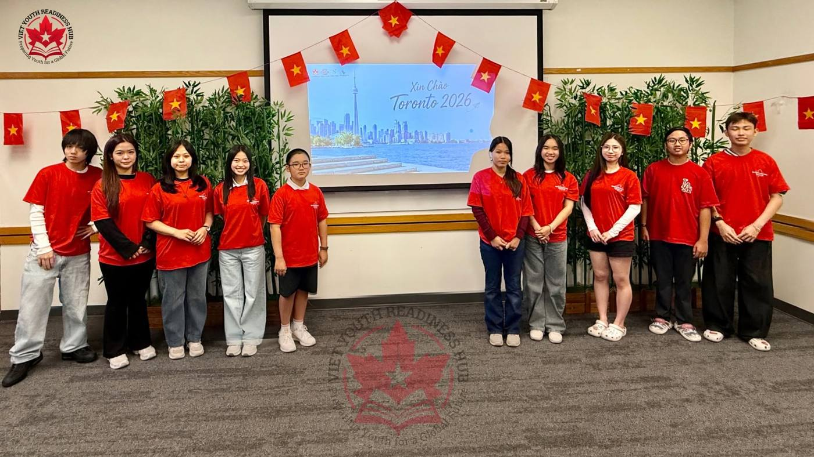
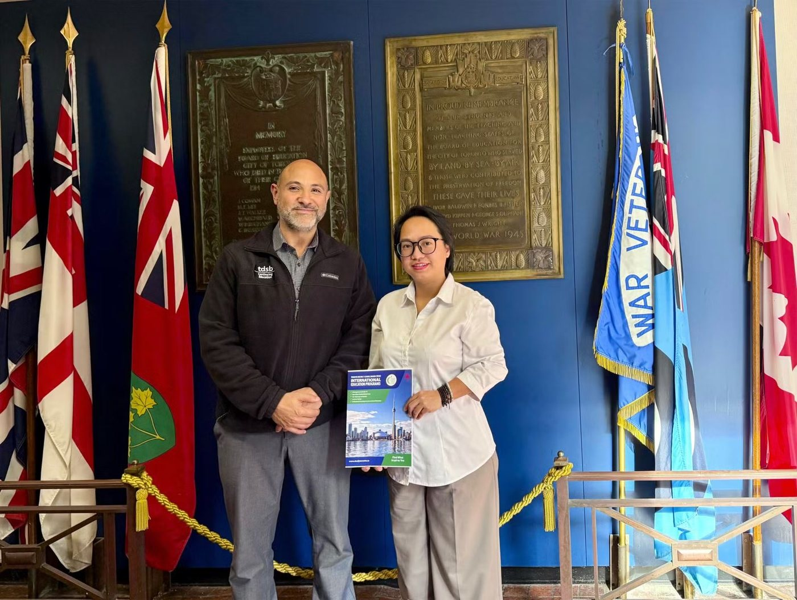
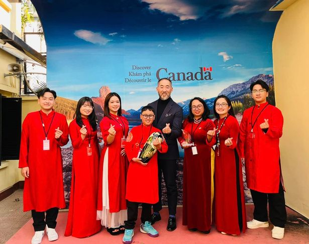
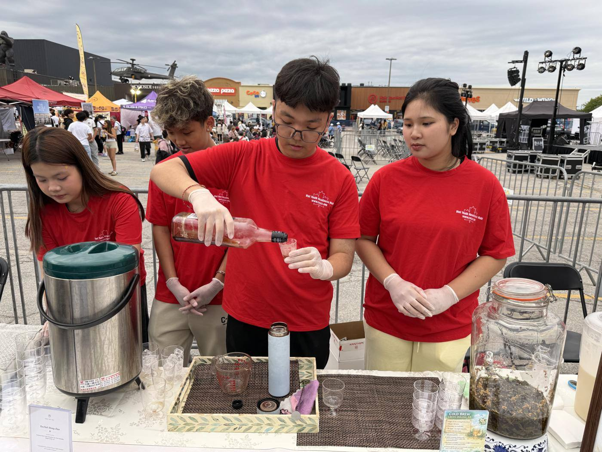
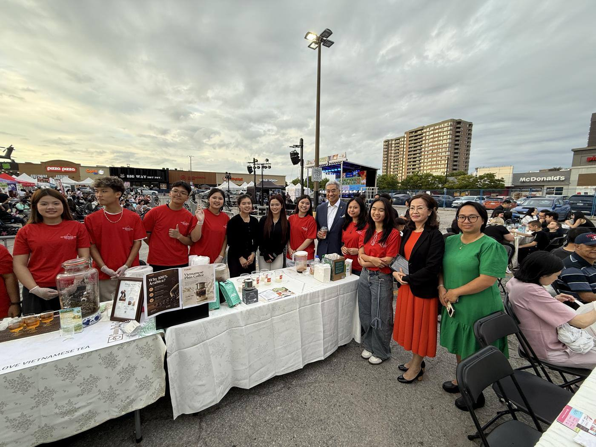
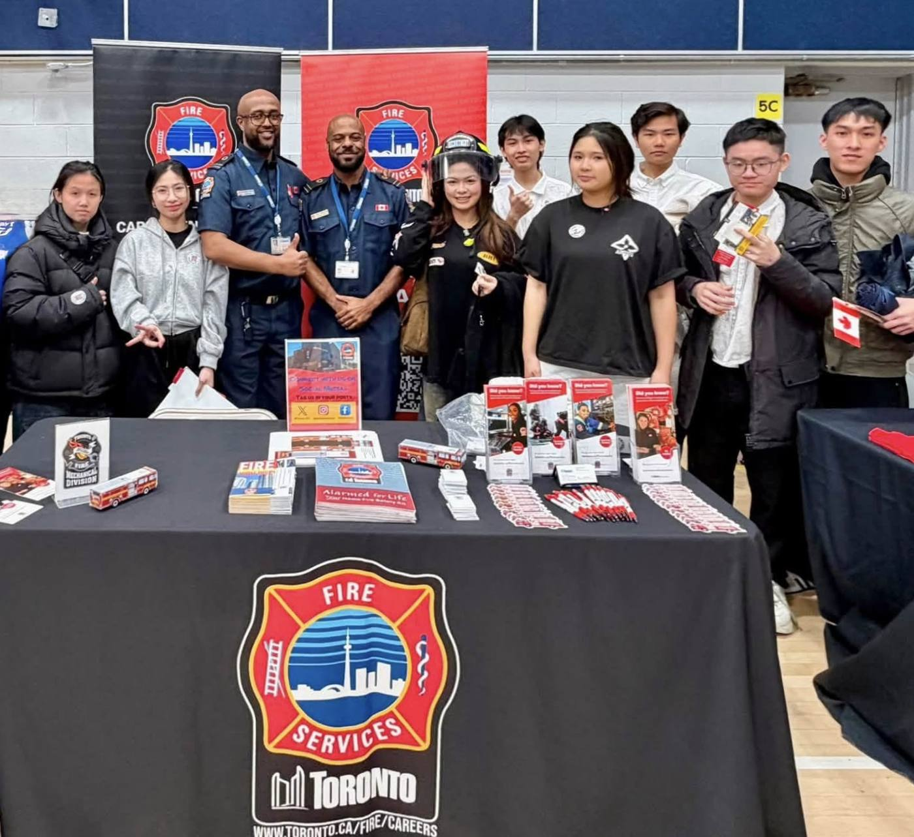
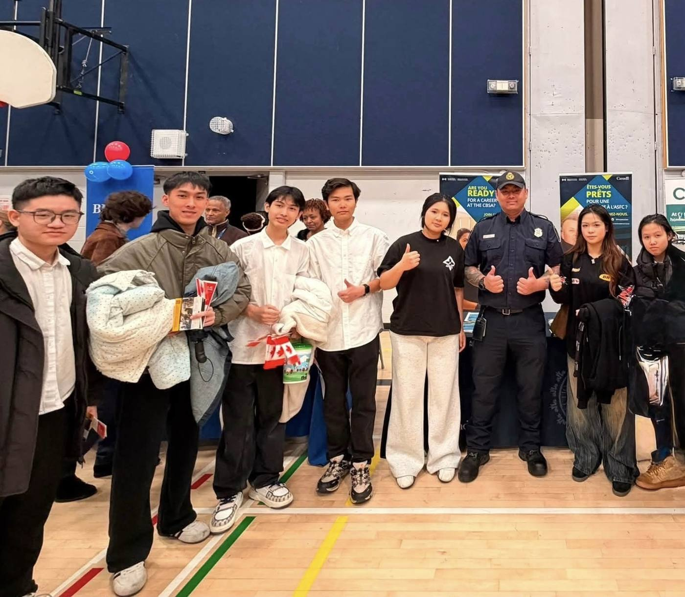
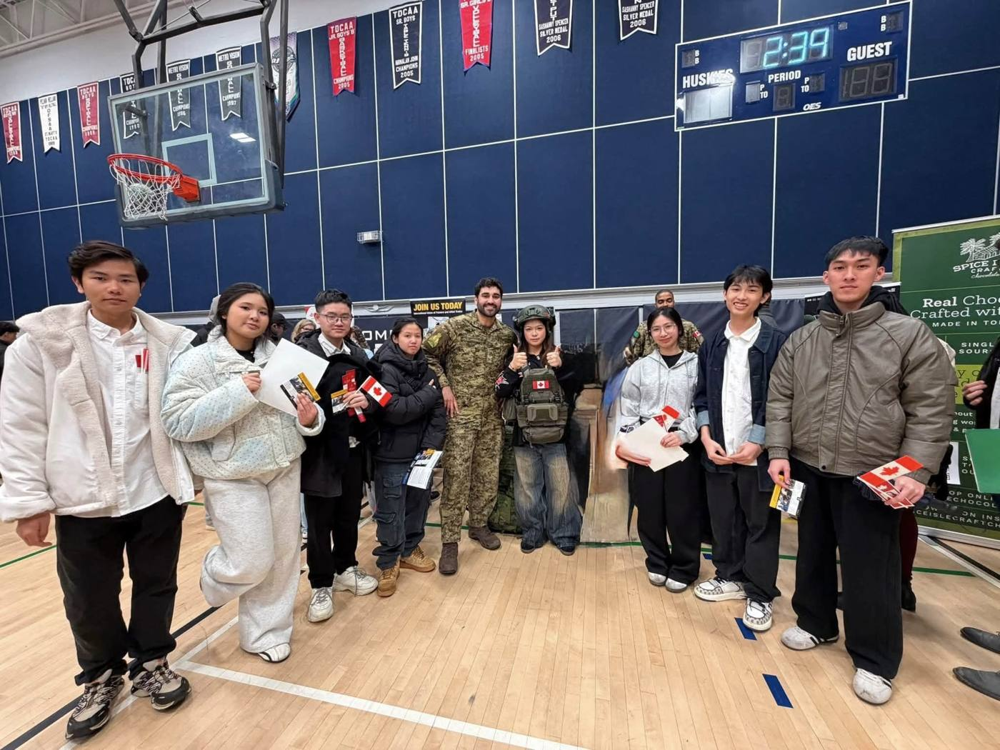

CVCEC · Viet Youth Readiness Hub
Kết nối giáo dục Canada – Việt Nam, đồng hành cùng thế hệ trẻ Connecting education in Canada and Viet Nam, side by side with young people
Hội đồng Văn hóa và Giáo dục Canada – Việt Nam (CVCEC) là tổ chức phi lợi nhuận cấp liên bang (số đăng ký 1657486-6). Viet Youth Readiness Hub (VYRH) là sáng kiến thanh niên của CVCEC: giúp học sinh Việt Nam chuẩn bị trước khi sang, vào học tại trường công lập Toronto, hòa nhập vững vàng và tự hào đóng góp bản sắc văn hóa Việt.
The Canada Vietnam Cultural & Educational Council (CVCEC) is a federal not-for-profit (Corporation No. 1657486-6). Viet Youth Readiness Hub (VYRH) is its youth initiative: it helps students from Viet Nam prepare before they leave, enrol in Toronto public schools, settle in with confidence and proudly share Vietnamese culture.
Cập nhật lần cuối: 21/11/2026Last updated: Nov 21, 2026



Tác động · Báo cáo hoạt động 10/2026Impact · Activity report, Oct 2026
Bước vào năm thứ 3, kể bằng những con sốEntering our third year, in numbers
Nguồn: Báo cáo hoạt động & giới thiệu CVCEC, phát hành tháng 10/2026. Số bài báo được đếm từ mục Truyền thông.Source: CVCEC activity report, published October 2026. The press count comes from the Media tab.
Báo chí đưa tinIn the news
Được báo chí Việt Nam đưa tinCovered by media in Viet Nam
TTXVN đưa tin · 19/03/2026Vietnam News Agency report · Mar 19, 2026
Mở hướng du học từ bậc phổ thông cho học sinh Việt Nam
Thông tấn xã Việt Nam đưa tin CVCEC thúc đẩy kết nối với Toronto District School Board (TDSB), giúp học sinh Việt Nam tiếp cận hệ thống giáo dục công lập Canada ngay từ bậc phổ thông, theo hướng du học sớm, có chuẩn bị và có định hướng.The Vietnam News Agency reported on CVCEC's outreach to the Toronto District School Board (TDSB) so Vietnamese students can enter Canada's public school system from secondary level, with study abroad that starts early, is well prepared and has clear direction.
Dấu ấn 2025–2026Highlights 2025–2026
Hai đất nước, một hành trìnhTwo countries, one journey
Từ hội thảo giáo dục quốc tế Ontario đến những ngày tình nguyện tại lễ hội đa văn hóa ở Toronto. Chạm vào ảnh để xem lớn.
From Ontario's international education symposium to volunteer days at a Toronto multicultural festival. Tap a photo to enlarge it.
Mạng lướiNetwork
Thành viên và hợp tác thể chếMemberships and institutional collaboration
CVCEC là thành viên củaCVCEC is a member of
Hoạt động theo Canada Not-for-profit Corporations Act, số đăng ký 1657486-6, định kỳ báo cáo hoạt động và tài chính theo quy định liên bang.Operates under the Canada Not-for-profit Corporations Act (Corporation No. 1657486-6) and reports on activities and finances as federal rules require.
Cộng tác cùng các thể chế giáo dụcWorking with education institutions
Cùng các trường phổ thông, cao đẳng và đại học tại Canada và Việt Nam.Along with schools, colleges and universities in Canada and Viet Nam.
Em là học sinh? Đăng ký quan tâm cùng VYRHAre you a student? Register your interest with VYRH
Nhận thông tin định hướng, lời mời tham gia khóa học miễn phí 45 phút của MapleSpark và các hoạt động tình nguyện, văn hóa. Không mất phí, không ràng buộc.Get orientation information, an invitation to MapleSpark's free 45-minute course, and volunteer and culture activities. Free, with no obligation.
Bạn đang tìm thông tin gì?What are you looking for?
Học sinhStudents
Đăng ký quan tâm, khóa học miễn phí 45 phút của MapleSpark, tình nguyện thật và nhóm VYRH.Register interest, MapleSpark's free 45-minute course, real volunteering and the VYRH team.
Xem trangOpen →Phụ huynhParents
Lộ trình hồ sơ TDSB, cam kết của CVCEC và Ban phụ huynh học sinh Việt Nam.The TDSB application route, CVCEC's commitments and the Vietnamese Parents' Council.
Xem trangOpen →Trường học OntarioOntario schools
Hệ thống K–12, bằng OSSD, chương trình học và trường TDSB khu vực North York.The K–12 system, the OSSD, the curriculum and TDSB schools in North York.
Xem trangOpen →Learning Hub
7 video ngắn, quiz, hỏi đáp, tự kiểm tra tốt nghiệp, danh mục hồ sơ, giấy phép du học.7 short videos, quizzes, FAQ, graduation self-check, documents and study permits.
Xem trangOpen →Truyền thôngMedia
Báo chí, video và thư viện hình ảnh.Press coverage, videos and the photo library.
Xem trangOpen →Về chúng tôiAbout us
CVCEC, Viet Youth Readiness Hub, đội ngũ và dấu mốc 2026.CVCEC, Viet Youth Readiness Hub, our team and 2026 milestones.
Xem trangOpen →4Về VYRH và CVCECAbout VYRH and CVCEC
Một cây cầu, hai đất nước, cùng một mục tiêu: học sinh sẵn sàngOne bridge, two countries, one goal: ready students
CVCEC là đơn vị kết nối thể chế và hỗ trợ du học sinh, không chỉ đưa học sinh đến trường. Chúng tôi dùng Viet Youth làm cây cầu nối giáo dục hai nước: phía Việt Nam là gia đình và nhà trường cần thông tin đúng; phía Canada là hệ thống công lập cần học sinh được chuẩn bị tốt và hòa nhập nhanh.
CVCEC is an institutional connector and student-support organization, not just a placement service. We use Viet Youth as a bridge between the two education systems: in Viet Nam, families and schools need accurate information; in Canada, public schools need students who arrive prepared and settle in quickly.
Cập nhật lần cuối: 21/11/2026Last updated: Nov 21, 2026
Tại Việt NamIn Viet Nam Trước khi điBefore departure
- Làm quen với văn hóa học tập ở Canada qua khóa học trực tuyến miễn phí 45 phút của MapleSpark Experience Canada.
- Get to know the learning culture in Canada through MapleSpark Experience Canada's free 45-minute online course.
- Buổi giới thiệu giáo dục phổ thông công lập Ontario cùng đại diện TDSB (đoàn công tác 10/2026).
- Information sessions on Ontario K-12 public education with TDSB representatives (October 2026 mission).
- Hướng dẫn gia đình tự chuẩn bị hồ sơ, nhận diện dịch vụ lừa đảo, giấy tờ giả.
- Guidance so families can prepare their own documents and spot fraudulent services and fake paperwork.
Tại CanadaIn Canada Sau khi đếnAfter arrival
- Định hướng nhập học, đời sống đô thị và mô hình “First Landing Pad” cho học sinh mới đến Toronto.
- School, city-life orientation and a “First Landing Pad” model for students newly arrived in Toronto.
- Cơ hội tình nguyện thật, có giám sát, phục vụ cộng đồng và tính vào 40 giờ cộng đồng khi được nhà trường chấp thuận.
- Real, supervised volunteer roles that serve the community and can count toward the 40 community-involvement hours when the school approves them.
- Tự hào đóng góp bản sắc văn hóa Việt tới bạn bè quốc tế qua lễ hội, triển lãm và các dự án cộng đồng đa văn hóa.
- Proudly sharing Vietnamese cultural identity with international friends through festivals, exhibitions and multicultural community projects.
Phát triển văn hóa & đóng góp bản sắcCulture & identity
Dự án văn hóa chung của cả nhóm: giới thiệu văn hóa Việt tại lễ hội, triển lãm, góc sách di sản và học liệu cộng đồng. Mỗi bạn được thử sức ở vai trò thực tập tình nguyện (volunteer intern), đóng góp cho cộng đồng đa văn hóa của Canada.
The whole team's shared culture project: presenting Vietnamese culture at festivals, exhibitions, a heritage book corner and community learning resources. Every member can try a volunteer intern role and contribute to Canada's multicultural community.
Thủ lĩnh trẻ & đời sống công dânCivic leadership
Đối thoại với chính quyền địa phương, tham gia các hội đồng thanh niên tại địa phương, phát triển mạng lưới Thủ lĩnh trẻ (Chapter Leaders) ngoài Ontario.
Dialogue with local government, participation in local youth councils, and a growing network of Chapter Leaders beyond Ontario.
Sẵn sàng học thuật & nghề nghiệpAcademic & career readiness
Chuẩn bị trước khi sang, định hướng hệ thống trường Ontario, khám phá nghề nghiệp tại các hội chợ việc làm, kỹ năng giao tiếp và lãnh đạo.
Pre-departure preparation, Ontario school orientation, career exploration at job fairs, and communication and leadership skills.
Dấu mốc 20262026 milestones
- TTXVN đưa tin CVCEC thúc đẩy kết nối với TDSB, mở hướng du học từ bậc phổ thông.Vietnam News Agency reports CVCEC's outreach to TDSB on early, prepared study pathways.
- Ra mắt VYRH tại Toronto dịp Giỗ Tổ Hùng Vương, khởi động dự án chung về phát triển văn hóa và đóng góp bản sắc.VYRH launches in Toronto at the Hùng Kings' commemoration and starts the team's shared project on culture and identity.
- Tham gia hội chợ việc làm Davenport Job Fair để khám phá nghề nghiệp.Youth attend the Davenport Job Fair to explore careers.
- Được chọn vào chương trình Leading Urban Change của School of Cities, Đại học Toronto.Selected for the University of Toronto School of Cities' Leading Urban Change program.
- Tham dự Hội thảo Giáo dục Quốc tế K-12 Ontario do OASDI tổ chức tại Sheridan College.Attends the Ontario K-12 International Education Symposium hosted by OASDI at Sheridan College.
- Buổi định hướng và kết nối cho du học sinh mới sang cùng thanh thiếu niên gốc Việt sinh ra tại Canada.Orientation and networking event for newly arrived international students and Canadian-born Vietnamese youth.
- Tình nguyện tại Asialicious Carnival 2026.Volunteering at Asialicious Carnival 2026.
- CVCEC phối hợp cùng TDSB tổ chức đoàn công tác tại Hà Nội và TP. Hồ Chí Minh, giới thiệu giáo dục phổ thông công lập Ontario.CVCEC and TDSB hold a work mission in Hà Nội and Ho Chi Minh City introducing Ontario K-12 public education.
Đội ngũ thanh niên nòng cốtYouth leadership team
Hội đồng Văn hóa và Giáo dục Canada – Việt NamCanada Vietnam Cultural & Educational Council
Văn hóa giao hòa, tri thức thăng hoaWhere cultures meet, knowledge grows
CVCEC là tổ chức phi lợi nhuận cấp liên bang tại Canada, hoạt động theo Canada Not-for-profit Corporations Act (số đăng ký 1657486-6). Sứ mệnh của chúng tôi là làm cầu nối tin cậy giữa các thể chế giáo dục hai nước, hỗ trợ thế hệ trẻ hội nhập toàn cầu và gìn giữ bản sắc văn hóa Việt.
CVCEC is a federal not-for-profit in Canada under the Canada Not-for-profit Corporations Act (Corporation No. 1657486-6). Our mission is to be a trusted bridge between education institutions in both countries, help young people thrive globally and keep Vietnamese cultural identity alive.
Hội nhập công dân & lãnh đạoCivic integration & leadership
Phát triển năng lực lãnh đạo, khả năng hội nhập, sự tự tin và ý thức trách nhiệm xã hội cho thanh thiếu niên.
Building leadership, integration skills, confidence and social responsibility in young people.
Giáo dục & hợp tác song phươngEducation & bilateral cooperation
Kết nối học thuật Canada – Việt Nam, thúc đẩy trao đổi, cơ hội học bổng và hợp tác giáo dục.
Linking Canadian and Vietnamese education, with exchanges, scholarship opportunities and institutional cooperation.
Ngoại giao văn hóa & di sảnCultural diplomacy & heritage
Gìn giữ tiếng Việt và di sản văn hóa, lan tỏa giao lưu nhân dân trong cộng đồng đa văn hóa.
Keeping the Vietnamese language and heritage alive and building people-to-people ties in a multicultural community.
Tầm nhìn 2026–2030Vision 2026–2030
Trở thành tổ chức dẫn đầu thúc đẩy ngoại giao giáo dục và hợp tác chiến lược song phương Canada – Việt Nam; xây dựng hệ sinh thái hỗ trợ thế hệ trẻ phát triển toàn diện, tự tin gánh vác trách nhiệm công dân toàn cầu.
To lead in education diplomacy and strategic Canada – Viet Nam cooperation, and to build an ecosystem in which young people grow in every way and take on the responsibilities of global citizens with confidence.
Giá trị cốt lõiCore values
“Chúng tôi không chỉ kết nối hai quốc gia, mà còn kết nối con người, mở ra cơ hội và cùng kiến tạo tương lai.”“We don't only connect two countries. We connect people, open doors and build the future together.”
Quản trịGovernance
- Pháp nhân phi lợi nhuận liên bang theo Canada Not-for-profit Corporations Act, số đăng ký 1657486-6.
- Federal not-for-profit under the Canada Not-for-profit Corporations Act, Corporation No. 1657486-6.
- Thành viên Imagine Canada và Ontario Nonprofit Network.
- Member of Imagine Canada and the Ontario Nonprofit Network.
- Định kỳ báo cáo hoạt động và tài chính theo quy định liên bang.
- Regular activity and financial reporting under federal rules.
- Không thu phí của học sinh và gia đình. Xem cam kết
- No fees from students or families. See our commitments
Ban điều hành CVCECCVCEC leadership
Dành cho học sinhFor students
Sẵn sàng trước khi sang, tự tin khi đến TorontoReady before you leave, confident when you arrive
VYRH là nhóm thanh niên do chính các bạn trẻ Việt ở Toronto dẫn dắt. Chúng mình đồng hành cùng em từ lúc còn ở Việt Nam đến khi đã quen trường, quen bạn và tìm được chỗ đứng trong cộng đồng.
VYRH is a youth group led by young Vietnamese people in Toronto. We walk with you from home in Viet Nam until you know your school, have friends and have found your place in the community.
Cập nhật lần cuối: 21/11/2026Last updated: Nov 21, 2026
Làm quen cách học ở CanadaGet to know Canadian learning
Khóa học trực tuyến miễn phí 45 phút của MapleSpark về văn hóa học tập ở trường Canada.MapleSpark's free 45-minute online course on the learning culture in Canadian schools.
Định hướng & bạn đồng hànhOrientation & peers
Buổi định hướng nhập học và đời sống Toronto, gặp anh chị đi trước và các bạn cùng trang lứa.School and Toronto-life orientation, and meeting older students and peers.
Tình nguyện thậtReal volunteering
Vai trò tình nguyện có người phụ trách, tính vào 40 giờ cộng đồng khi nhà trường chấp thuận.Supervised volunteer roles that can count toward the 40 community hours when the school approves.
Lãnh đạo, văn hóa, nghề nghiệpLeadership, culture, careers
Dự án văn hóa chung, đối thoại với chính quyền địa phương, khám phá nghề tại hội chợ việc làm.The shared culture project, dialogue with local government and career fairs.
Video · 1:08
Chào đón học sinh mới tới TorontoWelcoming new students to Toronto
Buổi định hướng ngày 31/8/2026: các bạn du học sinh vừa sang gặp thanh thiếu niên gốc Việt tại Canada, nghe chia sẻ về trường học, đời sống ở Toronto và cách bắt đầu năm học mới.Our orientation on Aug 31, 2026: newly arrived international students met Vietnamese-Canadian youth and heard about school, life in Toronto and how to start the new school year.
Mốc thời gian em cần biếtDates to know
- Chuỗi sự kiện giới thiệu áo dài và bánh mì Việt Nam tới bạn bè quốc tế tại Vega Academy và International Business University (Toronto).Áo dài and bánh mì events for international friends at Vega Academy and International Business University (Toronto).
- Hạn cuối nhận hồ sơ TDSB cho kỳ nhập học tháng 2/2027.Last day to apply to TDSB for the February 2027 intake.
- TDSB nhận hồ sơ cho kỳ nhập học tháng 9/2027.TDSB application window for the September 2027 intake.
Hạn nộp theoDeadlines from TDSB – How to Apply.
Ai nên tham gia VYRH?Who is VYRH for?
- Học sinh ở Việt Nam đang tìm hiểu du học phổ thông công lập tại Toronto.
- Students in Viet Nam exploring public school in Toronto.
- Du học sinh vừa sang hoặc sắp sang Toronto, cần định hướng và bạn bè.
- International students who have just arrived in Toronto or are about to, and want orientation and friends.
- Thanh thiếu niên gốc Việt tại Canada muốn tham gia tình nguyện, dự án văn hóa và lãnh đạo trẻ.
- Vietnamese-Canadian youth who want to volunteer, join culture projects and lead.
Đăng ký quan tâmRegister your interest
Để lại thông tin, VYRH sẽ liên hệ với emLeave your details and VYRH will get in touch
Đăng ký không mất phí và không ràng buộc. Sau khi đăng ký, em sẽ nhận:Registering is free and carries no obligation. After you register, you will receive:
- Thông tin định hướng bằng tiếng Việt về trường công lập Ontario, TDSB và cách chuẩn bị hồ sơ.Orientation information in Vietnamese on Ontario public schools, TDSB and how to prepare documents.
- Lời mời tham gia buổi giới thiệu trực tuyến và khóa học miễn phí 45 phút của MapleSpark Experience Canada về văn hóa học tập ở Canada.Invitations to online information sessions and to MapleSpark Experience Canada's free 45-minute course on the learning culture in Canada.
- Thông báo về hoạt động tình nguyện, sự kiện văn hóa và cơ hội tham gia nhóm VYRH (với các bạn đang ở Canada).News of volunteer roles, cultural events and chances to join the VYRH team (for students already in Canada).
Nếu em dưới 18 tuổi, hãy điền cùng cha mẹ hoặc người giám hộ. Thông tin của em chỉ được dùng để CVCEC và VYRH liên hệ về các chương trình nêu trên. Phụ huynh có thể đăng ký riêng tại Ban phụ huynh.If you are under 18, please fill it in with a parent or guardian. Your details are used only for CVCEC and VYRH to contact you about the programs above. Parents can sign up separately on the Parents' Council.
Phiếu đăng ký quan tâmInterest form
Phiếu mất khoảng 3 phút và mở trong Google Forms ở thẻ mới.The form takes about 3 minutes and opens in Google Forms in a new tab.
Mở phiếu đăng kýOpen the form →Em gửi email tới CVCEC với tiêu đề dưới đây, VYRH sẽ trả lời trong vài ngày làm việc.Email CVCEC with the subject line below and VYRH will reply within a few working days.
Tiêu đềSubject
Trong email, em cho biết:In your email, include:
- Họ tên, năm sinh, lớp và trường đang học
- Your name, year of birth, grade and current school
- Em đang ở Việt Nam hay Canada (thành phố)
- Whether you are in Viet Nam or Canada (city)
- Điều em quan tâm: MapleSpark, vào học TDSB, tình nguyện, tham gia nhóm VYRH
- What interests you: MapleSpark, studying at TDSB, volunteering, joining VYRH
- Email hoặc số điện thoại của cha mẹ (nếu em dưới 18 tuổi)
- A parent's email or phone (if you are under 18)
1MapleSpark Experience Canada
Bước làm quen trước khi chọn CanadaA first step before choosing Canada
MapleSpark Experience Canada là nền tảng học trực tuyến của đối tác MapleSpark. MapleSpark dành cho học sinh Việt Nam một khóa học miễn phí 45 phút, giúp các em hiểu văn hóa học tập ở Canada trước khi gia đình quyết định có nộp hồ sơ hay không.
MapleSpark Experience Canada is an online learning platform run by our partner MapleSpark. MapleSpark offers students in Viet Nam a free 45-minute course on the learning culture in Canada, before their family decides whether to apply.
- Đối tượng: học sinh Việt Nam đang tìm hiểu việc học phổ thông tại Canada, cùng gia đình.
- Who: students in Viet Nam exploring secondary school in Canada, together with their families.
- Hình thức: khóa học trực tuyến, khoảng 45 phút.
- Format: an online course of about 45 minutes.
- Nội dung: giới thiệu văn hóa học tập ở trường Canada.
- Content: an introduction to the learning culture in Canadian schools.
- Chi phí: miễn phí.
- Cost: free.
Nguồn: thông tin do MapleSpark xác nhận với CVCEC, 11/2026 ·Source: details confirmed by MapleSpark to CVCEC, Nov 2026 · maplespark.ai
5Tình nguyện thật, không đi làm “chui”Real volunteering, no unauthorized work
Trải nghiệm thực tế mà vẫn giữ an toàn pháp lýReal experience that keeps students on the right side of the rules
Học sinh phổ thông có giấy phép du học không đủ điều kiện đi làm ngoài trường theo quy định của IRCC. Trong khi đó, Ontario yêu cầu 40 giờ hoạt động cộng đồng để tốt nghiệp. VYRH tạo những vai trò tình nguyện thật để các em học hỏi, đóng góp và tích lũy giờ đúng cách.
IRCC's rules for working off campus without a work permit apply to post-secondary students, so K–12 international students in Ontario don't qualify. Ontario, meanwhile, requires 40 hours of community involvement to graduate. VYRH creates real volunteer roles so students can learn, contribute and earn hours the right way.
✓Tình nguyện hợp lệValid volunteering
- Không nhận lương; phục vụ cộng đồng; được nhà trường chấp thuận.
- Unpaid, community-serving, and approved by the school.
- Có người phụ trách, có xác nhận giờ.
- Supervised, with hours confirmed.
- Ví dụ: gian hàng văn hóa tại lễ hội, bàn đón tiếp sự kiện cộng đồng, dự án văn hóa chung của nhóm, định hướng cho bạn mới sang.
- Examples: festival culture booths, community event welcome desks, the team's shared culture project, orienting newly arrived peers.
Mức ghi nhận của TDSB dành cho du học sinh.TDSB recognition levels for international students.
✕Không được làmNot allowed
- Đi làm có lương (kể cả trả tiền mặt) khi chưa đủ điều kiện làm việc.
- Paid work, including cash jobs, without authorization to work.
- Gọi là “tình nguyện” nhưng thực chất thay thế một vị trí việc làm có lương.
- “Volunteering” that really fills a paid job.
- Rủi ro: ảnh hưởng tình trạng du học và các hồ sơ sau này.
- Risk: it can affect study status and future applications.
Sources: IRCC – Work off campus (modified 2026-04-15) · Ontario.ca – 40 hours · TDSB 2026–27 Handbook. Nếu có câu hỏi về tình trạng di trú của bạn, hãy hỏi RCIC hoặc luật sư.For questions about your own immigration status, ask an RCIC or a lawyer.
Video · 0:51
Đội tình nguyện VYRH tại Asialicious Carnival 2026The VYRH volunteer team at Asialicious Carnival 2026
Ba ngày 11–13/9/2026, các bạn VYRH phụ trách gian hàng, pha chế đồ uống, đón khách và giới thiệu văn hóa Việt tại lễ hội đa văn hóa ở Toronto. Đây là tình nguyện thật: không lương, có người phụ trách và phục vụ cộng đồng.Over Sept 11–13, 2026, VYRH youth ran a booth, made drinks, welcomed visitors and shared Vietnamese culture at a Toronto multicultural festival. This is real volunteering: unpaid, supervised and in service of the community.





Dành cho phụ huynhFor parents
Lộ trình vào trường công lập Toronto, rõ ràng từng bướcThe route into Toronto public schools, step by step
Thông tin dẫn từ nguồn chính thức, để gia đình tự quyết định. CVCEC không thu phí của học sinh và gia đình. CVCEC hợp tác với Hội đồng Trường học Toronto (TDSB) với vai trò cầu nối giáo dục; trong giai đoạn thí điểm, VYRH giới thiệu TDSB làm ví dụ điển hình cho học sinh chọn học tại Toronto.
Information drawn from official sources, so your family can decide for itself. CVCEC charges students and families no fees. CVCEC works with the Toronto District School Board (TDSB) as an education bridge, and in this pilot phase VYRH presents TDSB as its leading example for students choosing Toronto.
Cập nhật lần cuối: 21/11/2026Last updated: Nov 21, 2026
1–7Hệ sinh thái CVCECThe CVCEC ecosystem
Đồng hành đúng vai, rõ ràng từng bướcThe right role at every stop, clearly stated
Chúng tôi không làm giấy tờ thay bạn. Gia đình tự chuẩn bị hồ sơ theo hướng dẫn rồi gửi cho CVCEC; CVCEC liên hệ, nộp hồ sơ cho TDSB và theo dõi đến khi học sinh nhận Thư nhập học chính thức (OLA). Bước xin giấy phép du học do phụ huynh tự quyết.
We don't produce your documents for you. Families prepare their own documents with our guidance and send them to CVCEC; CVCEC contacts TDSB, submits the application and follows it until the student receives the Official Letter of Acceptance (OLA). The study permit step is the parents' decision.
1MapleSpark
Chuẩn bị trước khi điPrepare before you go
Khóa học trực tuyến miễn phí 45 phút của MapleSpark, giúp học sinh làm quen với văn hóa học tập ở Canada.
MapleSpark's free 45-minute online course, so students get to know the learning culture in Canada.
2TDSB
Nộp hồ sơ TDSBTDSB application
Nhận hồ sơ gia đình đã chuẩn bị, liên hệ và nộp cho Văn phòng Tuyển sinh Quốc tế TDSB, theo dõi đến khi có OLA.
We receive the documents your family prepared, submit them to TDSB's International Students and Admissions Office and follow up until the OLA is issued.
3IRCC
Giấy phép du học: phụ huynh tự quyếtStudy permit: parents decide
Phụ huynh tự nộp trên tài khoản IRCC, hoặc làm việc với đơn vị tư vấn mình chọn. Hãy yêu cầu người tư vấn cung cấp số giấy phép RCIC (College ID) và tự tra tại register.college-ic.ca để tránh lừa đảo.
Parents apply through their own IRCC account or work with any agency they choose. Ask the consultant for their RCIC licence number (College ID) and check it yourself at register.college-ic.ca to avoid scams.
4VYRH
Đến TorontoArrive in Toronto
Định hướng nhập học, hướng dẫn tìm chỗ ở an toàn (homestay, giám hộ), kết nối bạn bè và cộng đồng.
School orientation, guidance on safe accommodation (homestay, custodianship) and connections with peers and community.
5Tình nguyệnVolunteer
Hòa nhập đúng luậtBelong, legally
Vai trò tình nguyện thật tại sự kiện cộng đồng, dự án văn hóa của nhóm, hội chợ nghề nghiệp. Không đi làm “chui”.
Real volunteer roles at community events, the team's culture project and career fairs. No unauthorized work.
6–7OSSD
Tốt nghiệp & bước tiếpGraduate & move on
Hiểu yêu cầu bằng tốt nghiệp Ontario và lộ trình lên đại học, cao đẳng, học nghề qua Learning Hub.
Understand Ontario diploma requirements and pathways to university, college and apprenticeship through the Learning Hub.
✓CVCEC làmWhat CVCEC does
- Hướng dẫn danh mục giấy tờ theo đúng trang chính thức của TDSB và IRCC.
- Walk you through document lists exactly as TDSB and IRCC publish them.
- Nhận hồ sơ gia đình đã chuẩn bị, liên hệ và nộp cho TDSB, theo dõi đến khi học sinh nhận OLA.
- Receive the documents your family prepared, submit them to TDSB and follow up until the student receives the OLA.
- Hướng dẫn phụ huynh yêu cầu người tư vấn cung cấp số giấy phép, rồi tự tra cứu trên danh bạ công khai của CICC hoặc Law Society of Ontario.
- Show parents how to ask a consultant for their licence number and check it themselves on the CICC or Law Society of Ontario public registers.
- Định hướng, tình nguyện và dự án văn hóa sau khi bạn đến Toronto.
- Orientation, volunteering and culture projects after you arrive.
✕CVCEC không làmWhat CVCEC does not do
- Không làm hay nộp hồ sơ xin giấy phép du học/visa thay bạn.
- We don't prepare or submit study permit or visa applications for you.
- Không tư vấn di trú. Đó là việc của RCIC hoặc luật sư được cấp phép.
- We don't give immigration advice. That is the role of a licensed RCIC or lawyer.
- Nhân viên, tình nguyện viên và thành viên VYRH không điền, xem lại hay nộp biểu mẫu IRCC cho gia đình.
- Our staff, volunteers and VYRH members don't fill in, review or submit IRCC forms for families.
- Không cam kết đậu nhập học hay visa. TDSB quyết định nhập học, IRCC quyết định giấy phép.
- We don't promise admission or a visa. TDSB decides admission; IRCC decides permits.
- Không thu phí dịch vụ của học sinh và gia đình; học phí TDSB chỉ đóng qua kênh thanh toán chính thức của TDSB.
- We charge students and families no service fees; TDSB fees are paid only through TDSB's official payment channel.
Cam kết của CVCEC với gia đìnhOur commitments to families
Chúng tôi tin phụ huynh sẽ chọn đúng khi có đủ thông tin. Vì vậy CVCEC giữ sáu cam kết:We believe parents choose well when they have the full picture. So CVCEC keeps six commitments:
- Nói rõ vai trò của CVCECOur role, stated clearlyCVCEC hợp tác với TDSB với vai trò cầu nối giáo dục: định hướng, chuẩn bị về mặt học thuật, tiếp nhận và nộp hồ sơ, hỗ trợ học sinh hòa nhập khi mới sang Canada.CVCEC works with TDSB as an education bridge: orientation, academic preparation, receiving and submitting applications, and helping students settle in when they arrive in Canada.
- Không thu phí của gia đìnhNo fees from familiesCVCEC không thu phí của học sinh và gia đình cho việc hướng dẫn, nộp hồ sơ nhập học TDSB và tham gia các chương trình của VYRH.CVCEC charges students and families nothing for guidance, the TDSB application or VYRH programs.
- Đúng biểu phí, đúng kênhPublished fees, official channelHọc phí và các khoản phí của TDSB theo đúng biểu phí công khai, thanh toán qua kênh chính thức của TDSB.TDSB tuition and fees follow TDSB's published schedule and are paid through TDSB's official channel.
- Phi lợi nhuận, tái đầu tư cho cộng đồngNot-for-profit, reinvesting in communityCVCEC là tổ chức phi lợi nhuận cấp liên bang (số đăng ký 1657486-6); toàn bộ thặng dư được tái đầu tư vào hoạt động cộng đồng.CVCEC is a federal not-for-profit (Corporation No. 1657486-6); any surplus is reinvested in community programs.
- Nói đúng, có nguồnAccurate and sourcedThông tin trên trang đều dẫn nguồn chính thức. Chúng tôi không hứa hẹn kết quả nhập học hay visa.Information on this page cites official sources. We never promise admission or visa outcomes.
- Gia đình tự quyếtFamilies decideHãy tìm hiểu kỹ và quyết định khi sẵn sàng. Bước giấy phép du học do phụ huynh tự chọn cách làm; nếu làm việc với người tư vấn di trú, hãy kiểm tra số giấy phép RCIC (xem Learning Hub ③).Take your time and decide when ready. Parents choose how to handle the study permit; if you work with an immigration consultant, check their RCIC licence number (see Learning Hub ③).
Phụ huynh ở Việt Nam muốn được hướng dẫn về lộ trình nộp hồ sơ vào TDSB, xin liên hệ CVCEC qua trang.ptq@cvcec.org. Trao đổi hoàn toàn miễn phí và không ràng buộc.Parents in Viet Nam who would like guidance on the TDSB application route can contact CVCEC at trang.ptq@cvcec.org. Conversations are free and carry no obligation.
Các tổ chức giáo dục và cộng đồng muốn hợp tác cùng VYRH, xin liên hệEducation and community organizations interested in working with VYRH can reach us at trang.ptq@cvcec.org.
2Toronto District School Board
TDSB: hội đồng trường công lập lớn nhất CanadaTDSB: Canada's largest school board
CVCEC hợp tác với TDSB nhằm xây dựng cầu nối giáo dục, giúp học sinh Việt Nam tiếp cận hệ thống giáo dục công lập Canada ngay từ bậc phổ thông. Trong giai đoạn thí điểm, TDSB là ví dụ điển hình VYRH giới thiệu cho học sinh chọn Toronto. TDSB phục vụ khoảng 235.000 học sinh tại 579 trường, từ mẫu giáo đến lớp 12, với khoảng 1.400 du học sinh. Hơn 100 ngôn ngữ được sử dụng trong gia đình học sinh, và 28% học sinh sinh ra ngoài Canada.
CVCEC works with TDSB to build an education bridge that helps students from Viet Nam reach Canada's public school system from secondary level. In this pilot phase, TDSB is the leading example VYRH presents to students choosing Toronto. TDSB serves about 235,000 students in 579 schools from Kindergarten to Grade 12, including about 1,400 international students. Families speak more than 100 languages, and 28% of students were born outside Canada.
Đa dạngDiversity
Môi trường chào đón học sinh từ mọi hoàn cảnh, năng lực và phong cách học tập, với chương trình hỗ trợ tiếng Anh (ESL/ELD) giúp học sinh mới hòa nhập nhanh.
A welcoming environment for students of every background, ability and learning style, with English language support (ESL/ELD) that helps newcomers settle quickly.
Chuẩn hóaStandards
Chương trình theo chuẩn Bộ Giáo dục Ontario; giáo viên được Ontario College of Teachers (OCT) cấp chứng nhận; lộ trình rõ ràng vào đại học, cao đẳng.
Curriculum set by the Ontario Ministry of Education, teachers certified by the Ontario College of Teachers (OCT), and clear pathways to university and college.
Đa sắc tộc & hòa nhậpMulticulturalism & inclusion
Phản ánh Toronto, một trong những thành phố đa văn hóa nhất thế giới. Khác biệt văn hóa và ngôn ngữ được xem là thế mạnh trong lớp học.
A mirror of Toronto, one of the world's most multicultural cities, where cultural and language differences are treated as strengths.
Source: TDSB – About Us · tdsb.on.ca
Vì sao giai đoạn đầu chúng tôi lấy TDSB làm ví dụ?Why do we start with TDSB as our example?
- Văn phòng CVCEC và nhóm Viet Youth đều ở Toronto, nên chúng tôi có thể đón và đồng hành trực tiếp với học sinh mới sang.
- CVCEC's office and the Viet Youth team are both in Toronto, so we can welcome newly arrived students and support them in person.
- TDSB là hội đồng trường công lập lớn nhất Canada. Văn phòng Tuyển sinh Quốc tế của TDSB đặt tại 5050 Yonge Street, North York, khu vực nhóm Viet Youth bắt đầu hoạt động.
- TDSB is Canada's largest public school board. Its International Students & Admissions Office is at 5050 Yonge Street in North York, the area where the Viet Youth team started.
- CVCEC có thỏa thuận hợp tác bằng văn bản với TDSB, nên chúng tôi nắm rõ quy trình và có kênh liên hệ trực tiếp.
- CVCEC has a written cooperation agreement with TDSB, so we know the process well and have a direct line of contact.
- Chúng tôi muốn xây một mô hình hỗ trợ vững chắc ở một nơi trước, rồi mới mở rộng.
- We want to build a solid support model in one place first, then expand.
Các quy định chung của Ontario (chương trình học, bằng OSSD, 40 giờ cộng đồng) áp dụng cho mọi hội đồng trường công lập trong tỉnh. Gia đình hoàn toàn có thể chọn hội đồng trường khác. Sau giai đoạn thí điểm, chúng tôi sẽ bổ sung thông tin về các hội đồng trường khác.
Ontario's common rules (the curriculum, the OSSD diploma and the 40 community involvement hours) apply to every public school board in the province. Families are free to choose another school board. After the pilot phase, we will add information about other school boards.
Sources: TDSB 2026–27 International Student Handbook · TDSB – Our Office
4 bước nhập học dành cho du học sinh4 admission steps for international students
Chuẩn bị & gửi hồ sơPrepare & send documents
Gia đình chuẩn bị đơn, hộ chiếu/giấy khai sinh, thư giới thiệu, học bạ 2 năm gần nhất (công chứng, dịch tiếng Anh) và gửi cho CVCEC. CVCEC liên hệ và nộp hồ sơ cho TDSB.
Your family prepares the form, passport or birth certificate, recommendation letter and last two years of transcripts (notarized, translated) and sends them to CVCEC. CVCEC contacts TDSB and submits the application.
Gia đình chuẩn bị · CVCEC nộpFamily prepares · CVCEC submitsThư mời có điều kiện (COA)Conditional Offer (COA)
Đóng học phí và nộp giấy tờ giám hộ (custodianship) có công chứng.
Pay tuition and submit notarized custodianship documents.
CVCEC kết nối với TDSBCVCEC liaises with TDSBThư nhập học chính thức (OLA)Official Letter of Acceptance (OLA)
Dùng OLA để xin giấy phép du học với IRCC. Phụ huynh tự quyết bước này: tự nộp, hoặc làm với đơn vị tư vấn mình chọn. Hãy yêu cầu số giấy phép RCIC và tra tại danh bạ chính thức register.college-ic.ca, để bảo đảm không có lừa đảo.
Use the OLA to apply for a study permit with IRCC. Parents decide this step: apply yourself or work with an agency you choose. Ask for the RCIC licence number and check it on the official register at register.college-ic.ca, so there is no room for scams.
Phụ huynh tự quyếtParents decideTrình diện TDSBReport to TDSB
Mang hộ chiếu, giấy phép du học, hồ sơ newcomer; bảo hiểm y tế được kích hoạt khi trình diện.
Bring passport, study permit and newcomer profile; medical insurance starts when you report.
VYRH đón và định hướngVYRH welcome & orientationBiểu phí do TDSB công bố, 2026–27 & 2027–28TDSB's published fees, 2026–27 & 2027–28
| Phí hồ sơ (không hoàn lại)Application fee (non-refundable) | CAD 400 |
| Học phí cả nămTuition, full year | CAD 17,000 |
| Học phí một học kỳTuition, one semester | CAD 8,500 |
| Bảo hiểm y tế bắt buộc (1 năm)Mandatory medical insurance (1 year) | CAD 500 |
Học phí tiểu học và trung học đã gồm bài đánh giá Toán/ESL và chương trình hè – định hướng cho lớp 9–12. Từ 1/10/2026, mọi khoản thanh toán qua Flywire trong tài khoản TRUE North.Elementary and secondary tuition includes Math/ESL assessments and the Integrated Summer School & Orientation Program for Grades 9–12. From Oct 1, 2026, all payments go through Flywire via a TRUE North account.
Source: TDSB Fee Schedules
Quy tắc cần biếtRules worth knowing
- Du học sinh chỉ học chương trình thường; không vào được IB, French Immersion, giáo dục đặc biệt hay chương trình nghệ thuật/thể thao khu vực.
- International students join regular programs only; IB, French Immersion, Special Education and regional arts or sports programs are not available.
- Có thể chọn 3 nguyện vọng. TDSB xếp trường dựa trên đánh giá học lực (qua học bạ) và chỗ trống tại các trường đã chọn, nên không bảo đảm vào trường mong muốn.
- You may list three preferences. TDSB places students based on its review of their academic standing and space at the requested schools, so a first choice is not guaranteed.
- Dưới 18 tuổi bắt buộc có người giám hộ: từ 25 tuổi, là công dân hoặc thường trú nhân Canada.
- Under 18 requires a custodian aged 25 or older who is a Canadian citizen or permanent resident.
- Bài đánh giá Tiếng Anh và Toán làm trước khi sang, mỗi bài chỉ một lần.
- English and math assessments are done before arrival, one attempt each.
Sources: How to Apply · Custodianship · 2026–27 Handbook
Kỳ vọng khi học tại TDSBWhat TDSB expects
- Học toàn thời gian: 4 môn mỗi học kỳ ở lớp 9–11, tối thiểu 3 môn ở lớp 12.
- Full-time study: 4 courses per semester in Grades 9–11, at least 3 in Grade 12.
- Học sinh vào lớp 11–12 có thể cần từ 2 năm trở lên để tốt nghiệp OSSD, tùy nền tảng và kết quả đánh giá.
- Students entering Grade 11 or 12 may need two or more years to graduate, depending on background and assessments.
- Học sinh mới lớp 9–12 học tại trường được xếp ít nhất 1 năm trước khi xin chuyển; quãng đường hay đổi homestay không phải lý do chuyển trường.
- New Grade 9–12 students stay at their assigned school for a full year before asking to transfer; distance or a homestay change is not a reason.
- Dưới 18 tuổi không được sống một mình; lớp 9–12 có thể ở với cha mẹ, người giám hộ hoặc gia đình homestay do cha mẹ/người giám hộ sắp xếp.
- Students under 18 cannot live alone; Grades 9–12 may live with a parent, custodian or a host family arranged by them.
- TDSB xét tuyển dựa trên học bạ dịch thuật, báo cáo của trường và thư giới thiệu, không yêu cầu IELTS hay TOEFL để nhập học.
- Admission is based on translated transcripts, school reports and a recommendation letter, not IELTS or TOEFL.
- Nếu IRCC từ chối giấy phép du học, TDSB hoàn học phí sau khi trừ phí hành chính CAD 750. Gia đình phải nộp bản sao thư từ chối gốc của IRCC trong vòng 60 ngày kể từ ngày ghi trên thư; quá hạn sẽ không được hoàn. Phí hồ sơ không hoàn lại.
- If IRCC refuses the study permit, TDSB refunds tuition minus a CAD 750 administrative fee. The family must submit a copy of the original IRCC refusal letter within 60 calendar days of the date on the letter, or no refund is given. The application fee is non-refundable.
Sources: TDSB – Refund Policy (hiệu lực từ 1/9/2025)(effective Sep 1, 2025) · TDSB – FAQs · TDSB 2026–27 Handbook
Video và tài liệu chính thức từ TDSBOfficial TDSB videos and guides
- VIDEOĐịnh hướng cho học sinh mới (tiếng Việt)New student orientation (Vietnamese)TDSB New Student Orientation
- VIDEOGiới thiệu chương trình du học sinh TDSB (có phụ đề)TDSB International Student Programs (captioned)TISP
- PDFĐịnh hướng học sinh trung học (1/2026)Secondary student orientation (Jan 2026)
- PDFĐịnh hướng học sinh tiểu họcElementary student orientation
- PDFHướng dẫn dành cho người giám hộCustodian orientation
- PDFBảo hiểm y tế StudyInsuredStudyInsured medical insurance
- WEBTất cả tài nguyên cho du học sinh TDSBAll TDSB international student resources
Ban phụ huynh học sinh Việt NamVietnamese Parents' Council
Cha mẹ cùng lên tiếng, cùng đồng hành với conParents with a voice, walking alongside their children
Ban dành cho cha mẹ đang tìm hiểu cho con du học Canada và cha mẹ đã có con học tại Canada.For parents exploring study in Canada for their child, and parents whose children already study here.
- Nhận cập nhật bằng tiếng Việt, tóm tắt từ thông tin chính thức của TDSB, Bộ Giáo dục Ontario và IRCC.
- Receive updates in Vietnamese, summarised from official TDSB, Ontario Ministry of Education and IRCC information.
- Đưa ra mong muốn và sáng kiến cụ thể về việc học, sự an toàn và hòa nhập của con.
- Put forward specific wishes and initiatives on your child's learning, safety and integration.
- Kết nối phụ huynh ở Việt Nam và tại Toronto để chia sẻ kinh nghiệm.
- Connect parents in Viet Nam and in Toronto to share experience.
Đăng ký tham gia Ban phụ huynhJoin the Parents' Council
Điền phiếu đăng ký trên Google Form để nhận thông tin cập nhật. Phiếu dành cho cả phụ huynh ở Việt Nam và tại Canada.Fill in the Google Form to receive updates. It is open to parents in Viet Nam and in Canada.
Mở phiếu đăng kýOpen the registration form →Phiếu mở trong Google Forms ở thẻ mới. Nếu nút không mở được, hãy sao chép đường link:The form opens in Google Forms in a new tab. If the button doesn't open, copy the link:
Hệ thống giáo dục Ontario · TDSB làm ví dụOntario's education system · TDSB as the example
Chương trình học Ontario: luật chung của tỉnh, cách làm của TDSBThe Ontario curriculum: provincial rules, and how TDSB applies them
Mỗi mục được gắn nhãn để em và gia đình thấy rõ đâu là quy định chung do Bộ Giáo dục Ontario ban hành, đâu là cách TDSB áp dụng. Quy định tốt nghiệp thay đổi theo năm vào lớp 9, nên các mục có nhãn khóa nhập học. Khi các nguồn khác nhau, chúng tôi ưu tiên văn bản của Bộ, rồi đến TDSB.
Every item is labelled so you can tell provincial rules set by Ontario's Ministry of Education from the way TDSB applies them. Graduation rules depend on the year a student entered Grade 9, so items carry a cohort label. Where sources differ, we follow Ministry documents first, then TDSB.
ABức tranh tổng thểThe big picture
Từ mẫu giáo đến lớp 12, nhìn trong một khungKindergarten to Grade 12 at a glance
Hệ thống công lập Ontario gồm Mẫu giáo (JK, SK), Tiểu học (lớp 1–8, nhiều trường gom lớp 6–8 thành trung học cơ sở) và Trung học (lớp 9–12). Ở TDSB, học sinh được xếp lớp theo năm sinh, không theo học lực hay trình độ tiếng Anh.
Ontario's public system runs from Kindergarten (JK, SK) through Elementary (Grades 1–8, often with Grades 6–8 as middle school) to Secondary (Grades 9–12). At TDSB, grade placement follows year of birth, not marks or English level.
Sources: TDSB Grade Placement Policy · TDSB Available Schools. Sinh năm 2008 trở về trước: liên hệ TDSB.Born 2008 or earlier: contact TDSB.
Bộ Giáo dục OntarioMinistry of Education
Ban hành chương trình học (The Ontario Curriculum), yêu cầu tốt nghiệp OSSD và chính sách đánh giá (Growing Success). Áp dụng cho mọi trường công lập trong tỉnh.Sets the Ontario Curriculum, OSSD requirements and assessment policy (Growing Success) for every publicly funded school.
Hội đồng trường (school board)The school board
TDSB quản lý khoảng 235.000 học sinh tại 579 trường: phân vùng trường, chương trình đặc biệt, hỗ trợ ESL/ELD, quy trình giờ cộng đồng và tuyển sinh quốc tế.TDSB runs about 579 schools for some 235,000 students: school boundaries, special programs, ESL/ELD support, community-hours processes and international admissions.
Nhà trườngThe school
Hiệu trưởng duyệt giờ cộng đồng và công nhận tín chỉ tương đương; giáo viên Guidance hướng dẫn chọn môn và lộ trình.The principal approves community hours and grants equivalent credits; Guidance counsellors help with course choices and pathways.
Sources: Ontario Schools K–12 · Growing Success · TDSB – About Us
Chương trình học OntarioThe Ontario curriculum
Một chương trình chung cho cả tỉnhOne curriculum for the whole province
- Chương trình Ontario (The Ontario Curriculum) quy định kiến thức và kỹ năng học sinh từ lớp 1 đến lớp 12 cần phát triển và thể hiện ở từng môn, từng lớp.
- The Ontario Curriculum sets out the knowledge and skills students in Grades 1 to 12 are expected to develop and demonstrate in each subject and grade.
- Bộ Giáo dục Ontario quản lý hệ thống trường công lập; giáo viên phải bao quát mọi kỳ vọng (expectations) của chương trình khi lên kế hoạch giảng dạy.
- The Ministry of Education administers the publicly funded system, and teachers must account for every curriculum expectation in their planning.
- Lớp 9 học các khóa không phân luồng (de-streamed), ví dụ Toán lớp 9 (MTH1W).
- Grade 9 uses de-streamed courses, such as Grade 9 Mathematics (MTH1W).
- Với học sinh đang học tiếng Anh, nhà trường bắt buộc có chương trình và khóa học giúp các em phát triển năng lực tiếng Anh.
- For English-language learners, schools must offer programs and courses that build English proficiency.
Sources: Ontario Schools K–12 – Learning programs · Ontario Curriculum and Resources
Vì sao chọn Toronto để lấy bằng OSSDWhy earn the OSSD in Toronto
Học cùng lớp, cùng chuẩn với học sinh CanadaSame classes, same standards as Canadian students
- Một bằng, một chuẩnOne diploma, one standardOSSD có cùng yêu cầu cho mọi học sinh Ontario. Du học sinh TDSB học chương trình thường, ngồi cùng lớp với học sinh Canada.The OSSD has the same requirements for every Ontario student. TDSB international students take regular programs in the same classes as Canadian students.
- Hội đồng trường lớn và đa dạng nhất CanadaCanada's largest and most diverse boardTDSB có hơn 100 ngôn ngữ trong gia đình học sinh và 28% học sinh sinh ra ngoài Canada, nên học sinh mới không bị lạc lõng.More than 100 home languages and 28% of students born outside Canada, so newcomers are never the only ones.
- Lộ trình rõ ràng lên đại học, cao đẳngA clear path to university and collegeKhóa lớp 11–12 chia theo đích đến (U, M, C, E, O); học sinh chọn môn cùng giáo viên Guidance.Grade 11–12 courses are organized by destination (U, M, C, E, O), and students plan with a Guidance Counsellor.
- Lợi thế tiếng Anh khi vào sớmAn English advantage when you start earlyTheo TDSB, học sinh học trường trung học dạy bằng tiếng Anh dưới 4 năm thường cần TOEFL hoặc IELTS khi vào đại học. Bắt đầu từ lớp 9 giúp con có đủ 4 năm; yêu cầu cụ thể do từng trường đại học quy định.TDSB notes that students with fewer than four years in an English-language high school generally need TOEFL or IELTS for university. Starting in Grade 9 gives four years; each university sets its own rules.
- Học qua cộng đồngLearning through community40 giờ hoạt động cộng đồng là yêu cầu tốt nghiệp. Toronto có rất nhiều sự kiện đa văn hóa, và VYRH giúp các em tham gia đúng cách.40 community hours are a graduation requirement. Toronto has a rich calendar of multicultural events, and VYRH helps students take part the right way.
Sources: TDSB – Future Students · TDSB – About Us · TDSB – FAQs · Ontario.ca
BChương trình K–8K–8 curriculum
Những môn đã đổi mới, và mẫu giáo từ 9/2026What has changed, and Kindergarten from September 2026
Bộ Giáo dục lần lượt ban hành chương trình mới cho từng môn. Phụ huynh nên biết con đang học theo văn bản nào để hiểu bài tập và phiếu điểm.
The Ministry has been releasing new curriculum subject by subject. Knowing which document your child follows helps you read homework and report cards.
| MônSubject | Văn bảnDocument | Áp dụng từIn classrooms | Điểm mớiWhat's new |
|---|---|---|---|
| Mẫu giáo (JK, SK)Kindergarten | Kindergarten Curriculum (2026) | 9/2026 | Vẫn học qua chơi là chính; dạy đọc theo cách có hệ thống, từng bước; tăng nội dung toán, khoa học và công nghệ.Learning through play stays central; reading is taught in a structured, step-by-step way; more math, science and technology. |
| Toán lớp 1–8Math, Gr 1–8 | Mathematics (2020) | 2020 | Có lập trình (coding) và hiểu biết tài chính; là nền cho Toán lớp 9 không phân luồng.Adds coding and financial literacy; the base for de-streamed Grade 9 math. |
| Khoa học & Công nghệ lớp 1–8Science & Technology, Gr 1–8 | Science and Technology (2022) | 9/2022 | Gắn rõ với các nghề kỹ thuật (skilled trades) và giáo dục công nghệ.Explicit links to the skilled trades and technological education. |
| Ngôn ngữ (tiếng Anh) lớp 1–8Language, Gr 1–8 | Language (2023) | 9/2023 | Thay thế chương trình Ngôn ngữ năm 2006.Replaces the 2006 Language curriculum. |
| Xã hội lớp 1–6; Lịch sử & Địa lý lớp 7–8Social Studies 1–6; History & Geography 7–8 | Cập nhật 20232023 updates | 9/2023 | Lớp 6 thêm nội dung bắt buộc về Holocaust; lớp 1–3 bổ sung nội dung về First Nations, Métis và Inuit.Grade 6 adds mandatory learning on the Holocaust; Grades 1–3 add First Nations, Métis and Inuit learning. |
Nguồn chính thức (Chính phủ Ontario):Official sources (Government of Ontario): Mẫu giáoKindergarten: Ontario.ca – Kindergarten (updated 2026-07-02) · ToánMath: Ontario.ca – New math curriculum, Grades 1–8 · Khoa học & Công nghệScience & Technology: Science and Technology (2022) · Ngôn ngữLanguage: Language (2023) · Xã hội, Lịch sử & Địa lýSocial Studies, History & Geography: Social Studies 1–6, History and Geography 7–8 · Mốc áp dụng 2020, 2022, 2023, Toán lớp 9 nối tiếp Toán tiểu học, nội dung First Nations, Métis, Inuit lớp 1–3Start dates 2020, 2022, 2023, Grade 9 math building on elementary math, First Nations, Métis and Inuit learning in Grades 1–3: Ontario.ca – Getting back to basics. Văn bản đầy đủ của từng môn có trên trangFull documents for every subject are on the Ministry's Curriculum and Resources của Bộ. site.
Tham khảo phụ (không phải trang của Bộ):Secondary references (not Ministry sites): CTV News (18/12/2025) · OCDSB (12/2025), cho chi tiết chương trình mẫu giáo mới (dạy đọc có hệ thống, thêm toán, khoa học và công nghệ) · Bản ghi nhớ của Bộ do OPSBA và ETFO đăng lại:, for details of the new Kindergarten program (structured reading, more math, science and technology) · Ministry memos as reposted by OPSBA and ETFO: 8/3/2022 · 20/12/2022 · 6/2023.
Đánh giá cấp tỉnh (EQAO)Provincial assessments (EQAO)
EQAO là cơ quan độc lập tổ chức các bài đánh giá chung toàn tỉnh: đọc, viết và toán ở lớp 3 và lớp 6; Toán lớp 9; và bài thi đọc viết OSSLT, thường làm ở lớp 10.EQAO runs province-wide assessments: reading, writing and math in Grades 3 and 6; Grade 9 math; and the OSSLT literacy test, usually written in Grade 10.
Phiếu điểm tiểu họcElementary report cards
Mẫu giáo đến lớp 8 có báo cáo tiến bộ vào khoảng tháng 10–11 và phiếu điểm cuối mỗi kỳ. Với môn ngôn ngữ và toán lớp 1–8, giáo viên ghi điểm chữ hoặc điểm phần trăm.Kindergarten to Grade 8 get a progress report around October–November and end-of-term report cards. For language and math in Grades 1–8, teachers record a letter grade or percentage mark.
Source: Growing Success (updated 2026-10-14) · Ontario Schools K–12
CTrung học lớp 9–12Secondary, Grades 9–12
Đọc mã môn, hiểu lớp 9 không phân luồng và cách tính điểm mớiCourse codes, de-streamed Grade 9 and the new way marks are counted
Ontario Cách đọc mã mônReading a course code
Mỗi môn có mã 5 ký tự. Ví dụEvery course has a five-character code. For example ENG4U:
- W
- Lớp 9 không phân luồng (de-streamed), ví dụ MTH1W, SNC1W, ENL1WGrade 9 de-streamed, e.g. MTH1W, SNC1W, ENL1W
- D · P
- Academic (học thuật) · Applied (ứng dụng)Academic · Applied
- U · M · C · E
- Lớp 11–12: chuẩn bị đại học · đại học/cao đẳng · cao đẳng · đi làmGrades 11–12: university · university/college · college · workplace preparation
- O
- Mở, phù hợp mọi lộ trìnhOpen, for all pathways
Sources: Ontario Student Record Guideline, Appendix C · Ministry memo 6/2023 (ENL1W)
Ontario Lớp 9 bỏ phân luồngGrade 9 de-streaming
- Toán lớp 9 (MTH1W) chung một khóa, có lập trình và hiểu biết tài chính.Grade 9 Math (MTH1W) becomes one course, with coding and financial literacy.
- Khoa học lớp 9 (SNC1W) thay cho khóa Academic và Applied.Grade 9 Science (SNC1W) replaces the Academic and Applied courses.
- Tiếng Anh lớp 9 (ENL1W) thay cho ENG1D và ENG1P.Grade 9 English (ENL1W) replaces ENG1D and ENG1P.
- Học sinh vào lớp 9 từ năm này phải có 1 tín chỉ Technological Education ở lớp 9 hoặc 10.Students entering Grade 9 from this year need one Technological Education credit in Grade 9 or 10.
Sources: CTV News · Ministry memo 8/3/2022 · Ministry memo 6/2023 · Ontario.ca
Ontario Từ năm học 2026–27From 2026–27 Điểm cuối khóa lớp 9–12 được tính thế nàoHow final marks work in Grades 9–12
Từ năm học 2026–27, phần lớn các khóa trung học có bài thi viết, và chuyên cần cùng mức độ tham gia trở thành một phần của điểm. Vắng mặt có phép không làm giảm điểm.From 2026–27, most secondary courses have written exams, and attendance and participation become part of the mark. Excused absences do not lower a mark.
Lớp 9 và 10Grades 9 and 10
Lớp 11 và 12Grades 11 and 12
| MứcLevel | ĐiểmMark | Vắng không phépUnexcused absences | Tham gia, đóng gópParticipation |
|---|---|---|---|
| 4 | 80–100% | 0–2,5% | Thường xuyênConsistently |
| 3 | 70–79% | 2,5–5% | Nhìn chung cóGenerally |
| 2 | 60–69% | 5–7,5% | Thỉnh thoảngOccasionally |
| 1 | 50–59% | 7,5–10% | Ít khiInfrequently |
| Dưới mức 1Below 1 | <50% | >10% | Không tham giaDoes not participate |
Sources: Growing Success – September 2026 update (updated 2026-10-14) · Ontario Schools K–12
Sơ đồ học tập: từ lớp 9 đến bước tiếp theoLearning pathway: from Grade 9 to what comes next
Lớp 9–10 · Nền tảngGrades 9–10 · Foundations
Học các môn bắt buộc nền tảng, thi Literacy (OSSLT) ở lớp 10, bắt đầu tích lũy giờ cộng đồng. Học sinh chọn môn cùng giáo viên hướng nghiệp (Guidance).
Core compulsory courses, the literacy test (OSSLT) in Grade 10, and the start of community hours. Course selection is done with a Guidance Counsellor.
Lớp 11–12 · Chọn loại khóa họcGrades 11–12 · Course types
UChuẩn bị đại họcUniversity preparationMĐại học / cao đẳngUniversity/college preparationCChuẩn bị cao đẳngCollege preparationEChuẩn bị đi làmWorkplace preparationOMở (mọi lộ trình)Open (all pathways)Sau OSSDAfter the OSSD
Yêu cầu đầu vào cụ thể do từng trường đại học, cao đẳng quy định. Học sinh lớp 9–12 TDSB có thể học khóa ở cấp lớp khác với lớp được xếp, theo tư vấn của Guidance.Each university and college sets its own entry requirements. TDSB secondary students may take courses at other grade levels in consultation with Guidance. Source: Ontario Schools K–12 · TDSB
DYêu cầu tốt nghiệp OSSDOSSD requirements
Em vào lớp 9 năm nào, em theo quy định đóThe year you entered Grade 9 decides your rules
Ai cũng cần 30 tín chỉ, nhưng số tín chỉ bắt buộc và các yêu cầu đi kèm khác nhau theo khóa. Tự kiểm tra từng mục trong Learning Hub, thẻ “Tự kiểm tra tốt nghiệp”.
Everyone needs 30 credits, but the compulsory credits and extra requirements differ by cohort. Check yourself item by item in the Learning Hub's “Graduation self-check”.
| Yêu cầuRequirement | Vào lớp 9 năm 2023 trở về trướcEntered Gr 9 in 2023 or earlier | Vào lớp 9 năm 2024–25Entered Gr 9 in 2024–25 | Vào lớp 9 từ 2025–26Entered Gr 9 from 2025–26 |
|---|---|---|---|
| Tổng tín chỉTotal credits | 30 | 30 | 30 |
| Bắt buộc + tự chọnCompulsory + optional | 18 + 12 | 17 + 13 | 17 + 13 |
| 3 tín chỉ theo nhóm 1, 2, 33 credits from Groups 1, 2, 3 | ✓ | — | — |
| 1 Technological Education (lớp 9 hoặc 10)1 Technological Education (Gr 9 or 10) | — | ✓ | ✓ |
| 1 tín chỉ nhóm STEM bổ sung1 additional STEM-related credit | — | ✓ | ✓ |
| Yêu cầu đọc viết (OSSLT hoặc OSSLC)Literacy (OSSLT or OSSLC) | ✓ | ✓ | ✓ |
| 40 giờ hoạt động cộng đồng40 community involvement hours | ✓ | ✓ | ✓ |
| 2 tín chỉ học trực tuyến (khóa vào lớp 9 từ 2020–21)2 online learning credits (Gr 9 from 2020–21) | ✓ | ✓ | ✓ |
| Hiểu biết tài chính ≥ 70% trong Career Studies lớp 10Financial literacy ≥ 70% in Grade 10 Career Studies | — | — | ✓ |
Sources: Ontario.ca – Earning your high school diploma (updated 2026-09-02) · Ontario Schools K–12, ch. 6 · TDSB – Getting your Diploma
Bằng Tốt nghiệp Trung học Ontario (OSSD)Ontario Secondary School Diploma (OSSD)
Cho học sinh vào lớp 9 từ năm 2024 trở đi: tối thiểu 30 tín chỉ = 17 bắt buộc + 13 tự chọn.For students entering Grade 9 in 2024 or later: at least 30 credits = 17 compulsory + 13 optional.
17 tín chỉ bắt buộcThe 17 compulsory credits
| Tiếng Anh (mỗi lớp 1)English (1 per grade) | 4 |
| Toán (lớp 9, 10 và 1 ở lớp 11/12)Math (Gr 9, 10 + one in 11/12) | 3 |
| Khoa họcScience | 2 |
| Nghệ thuậtArts | 1 |
| Địa lý Canada (lớp 9)Canadian Geography (Gr 9) | 1 |
| Lịch sử Canada (lớp 10)Canadian History (Gr 10) | 1 |
| Tiếng Pháp (ngôn ngữ thứ hai)French as a Second Language | 1 |
| Sức khỏe & Thể chấtHealth & Physical Education | 1 |
| Hướng nghiệp + Giáo dục công dânCareer Studies + Civics | 0.5 + 0.5 |
| Công nghệ (lớp 9 hoặc 10)Technological Education (Gr 9 or 10) | 1 |
| 1 tín chỉ STEM bổ sung1 additional STEM-related credit | 1 |
Sources: Ontario.ca – Earning your high school diploma (updated 2026-09-02) · Ontario Schools K–12, s. 6.1 · TDSB – Getting your Diploma. Học sinh vào lớp 9 năm 2023 trở về trước: 18 bắt buộc + 12 tự chọn.Students who entered Grade 9 in 2023 or earlier: 18 compulsory + 12 optional.
Yêu cầu đọc viếtLiteracy requirement
- Đa số học sinh đáp ứng bằng cách đạt bài thi OSSLT, thường làm vào năm sau lớp 9 (lớp 10).
- Most students meet it by passing the OSSLT, usually written in the year after Grade 9 (Grade 10).
- Sau hai lần có cơ hội thi, nếu ít nhất một lần chưa đạt, học sinh được học khóa OSSLC (mã OLC4O); hiệu trưởng có thể cho học sớm hơn.
- After two OSSLT opportunities with at least one unsuccessful result, students may take the OSSLC (OLC4O); principals may allow earlier entry.
TDSB TDSB ghi học sinh chưa đạt ít nhất một lần được học OLC4O; với khóa vào lớp 9 từ 2024–25, OSSLC có thể tính là tín chỉ tiếng Anh bắt buộc lớp 11 hoặc 12.TDSB says students unsuccessful at least once may take OLC4O; for the 2024–25 cohort onward, the OSSLC can count as a compulsory Grade 11 or 12 English credit.
Hiểu biết tài chínhFinancial literacy
- Làm các module tài chính trong môn bắt buộc Career Studies lớp 10 (mã GLC2O); cần đạt từ 70%.
- Complete financial literacy modules in compulsory Grade 10 Career Studies (GLC2O), scoring 70% or higher.
- Có hai lần làm bài trong khóa Career Studies.
- Two attempts during the Career Studies course.
- Học sinh từ ngoài Ontario vào lớp 11 hoặc 12, được hiệu trưởng công nhận tín chỉ lớp 9–10, không phải làm yêu cầu này.
- Students arriving from outside Ontario in Grade 11 or 12 who receive Grade 9–10 equivalency credits don't have to complete it.
TDSB Áp dụng từ tháng 9/2026 cho học sinh học môn Careers lớp 10.Applies from September 2026 to students in Grade 10 Careers.
40 giờ hoạt động cộng đồng40 community involvement hours
- Được bắt đầu tích lũy từ mùa hè trước khi vào lớp 9.
- Hours can start in the summer before Grade 9.
- Không tính hoạt động trong giờ học chính khóa; giờ nghỉ trưa và tiết trống thì được.
- Activities during instructional time don't count; lunch and spare periods do.
- Không tính: công việc thường được trả lương, hoạt động là một phần của môn học (như co-op), việc nhà thường ngày, chương trình do tòa án yêu cầu.
- Not eligible: work normally paid, activities required by a course (such as co-op), routine household chores, court-ordered programs.
- Học sinh dưới 18 tuổi lên kế hoạch cùng cha mẹ; hiệu trưởng duyệt; người phụ trách xác nhận ngày và số giờ.
- Students under 18 plan with a parent; the principal approves; the supervisor confirms dates and hours.
2 tín chỉ học trực tuyến2 online learning credits
- Áp dụng cho học sinh vào lớp 9 từ năm học 2020–21.
- For students who entered Grade 9 in 2020–21 or later.
- Gia đình có thể xin miễn bằng mẫu đơn của hội đồng trường; học sinh từ 18 tuổi tự ký.
- Families can opt out using the school board's form; students 18 or older sign it themselves.
Nếu chưa đủ OSSDIf the OSSD isn't complete
OSSC cần 14 tín chỉ (7 bắt buộc, 7 tự chọn), cấp theo yêu cầu khi rời trường ở tuổi 18. Certificate of Accomplishment ghi nhận quá trình học; học sinh có thể quay lại học tiếp để lấy OSSD.The OSSC needs 14 credits (7 compulsory, 7 optional) and is granted on request when leaving at 18. A Certificate of Accomplishment records learning; students can return to finish the OSSD.
Sources: Ontario Schools K–12, ch. 6 · PPM 124 – Community involvement (updated 2024-12-18) · Ontario.ca · TDSB – Getting your Diploma
ETDSB làm ví dụTDSB as the example
Quy định của tỉnh được TDSB áp dụng thế nàoHow TDSB puts the provincial rules into practice
Các hội đồng trường khác có thể làm khác một chút. Lịch đăng ký và công cụ chọn môn thay đổi theo năm, nên hãy luôn hỏi giáo viên Guidance của trường.
Other boards may do things slightly differently. Registration dates and course-selection tools change each year, so always check with your school's Guidance office.
Từ lớp 8 lên lớp 9From Grade 8 to Grade 9
- Tài liệu “Beyond 8 | Choices for 9” giới thiệu mọi thông tin khi lên trung học.
- The “Beyond 8 | Choices for 9” guide covers everything about starting high school.
- Các trường tổ chức buổi giới thiệu và open house hằng năm trong khoảng tháng 10 đến tháng 1.
- Schools hold information nights and open houses each year between October and January.
- Có trang riêng về học ngoài khu vực (Out of Area Admissions), trường không có ranh giới tuyển sinh và chương trình chuyên (Central Program Admissions).
- Separate pages cover Out of Area Admissions, schools without boundaries and specialized programs (Central Program Admissions).
Chọn mônChoosing courses
- Chọn môn qua phòng Guidance của trường, có tài liệu “Choices”, công cụ tìm môn (Course Search) và thời khóa biểu mẫu.
- Course selection runs through the school's Guidance office, with the “Choices” guide, Course Search and sample timetables.
- Lịch chọn môn và công cụ đăng ký do từng trường thông báo; trang chung của TDSB không ghi ngày cụ thể.
- Each school announces its course-selection dates and tool; TDSB's central page gives no fixed dates.
Chương trình và hỗ trợPrograms and support
- ESL/ELD: hỗ trợ tiếng Anh cho học sinh đang học tiếng Anh.
- ESL/ELD: English support for English-language learners.
- SHSM: chuyên ngành kỹ năng cao, gồm cả F.A.S.T. về nghề kỹ thuật.
- SHSM: Specialist High Skills Major, including F.A.S.T. for the skilled trades.
- Dual Credit: học môn cao đẳng khi còn ở trung học.
- Dual Credit: college courses while still in high school.
- Guidance & PLAR: tư vấn nghề nghiệp và công nhận học tập trước đó.
- Guidance & PLAR: career planning and recognition of prior learning.
Giờ cộng đồng ở TDSBCommunity hours at TDSB
- Bắt đầu từ mùa hè sau lớp 8; phải được hiệu trưởng hoặc người được ủy quyền duyệt trước.
- Start in the summer after Grade 8, with pre-approval from the principal or designate.
- TDSB có danh sách hoạt động được và không được chấp nhận, và mẫu đơn TDSB Community Involvement Form.
- TDSB publishes approved and non-approved activity lists and the TDSB Community Involvement Form.
- Không được thay thế người lao động có lương; số giờ hiện trên học bạ Ontario (OST) sau khi nộp.
- Activities can't displace paid workers; completion shows on the Ontario Student Transcript once submitted.
Sources: TDSB – Going to High School · TDSB – Getting your Diploma · TDSB Community Involvement Form · TDSB – How to Apply · Volunteer Toronto
FHọc sinh mới & phụ huynhNewcomers & parents
Mới sang Ontario: những điều gia đình cần nắmNew to Ontario: what families should know
Xếp lớp và hỗ trợ tiếng AnhPlacement and English support
- TDSB xếp lớp theo năm sinh. Tra nhanh bằng công cụ “Xếp lớp” trong Learning Hub.
- TDSB places students by birth year. Use the “Grade placement” tool in the Learning Hub.
- Ontario Nhà trường bắt buộc có chương trình và khóa học giúp học sinh phát triển năng lực tiếng Anh (ESL/ELD).
- Ontario Schools must offer programs and courses that build English proficiency (ESL/ELD).
- Học trường trung học dạy bằng tiếng Anh dưới 4 năm thường phải có TOEFL hoặc IELTS khi vào đại học; mỗi trường đại học có quy định riêng.
- Fewer than four years in an English-language high school usually means TOEFL or IELTS for university; each university sets its own rules.
Công nhận học bạ nước ngoàiRecognizing studies from abroad
- Hiệu trưởng quyết định số tín chỉ tương đương (equivalency) cho học sinh đến từ ngoài Ontario, dựa trên học bạ em mang theo.
- The principal decides equivalent credits for students from outside Ontario, based on the records they bring.
- Vào lớp 11 hoặc 12 và được công nhận tín chỉ lớp 9–10 thì không phải làm yêu cầu hiểu biết tài chính.
- Students entering Grade 11 or 12 with Grade 9–10 equivalency don't need the financial literacy requirement.
- Hãy mang học bạ và bản dịch theo danh mục hồ sơ TDSB trong Learning Hub.
- Bring transcripts and translations as listed in the TDSB document checklist in the Learning Hub.
Phụ huynh theo dõi điểm và chuyên cầnFollowing marks and attendance
- Từ 2026–27, chuyên cần và mức độ tham gia chiếm 10–15% điểm cuối khóa trung học. Hãy báo nhà trường khi con vắng có lý do, vì vắng có phép không làm giảm điểm.
- From 2026–27, attendance and participation make up 10–15% of secondary final marks. Tell the school when your child is absent for a reason, since excused absences don't lower marks.
- Giữ bản sao phiếu xác nhận giờ cộng đồng; số giờ hiện trên học bạ Ontario (OST) khi đã nộp.
- Keep copies of community-hours forms; hours show on the Ontario Student Transcript once submitted.
Khi nào nên gặp GuidanceWhen to see Guidance
- Trước mùa chọn môn, và trước khi chọn khóa lớp 11–12 (U, M, C, E).
- Before course selection, and before choosing Grade 11–12 courses (U, M, C, E).
- Khi muốn hỏi về công nhận tín chỉ, OSSLT, SHSM, Dual Credit hoặc lộ trình đại học, cao đẳng, học nghề.
- For questions about equivalency, the OSSLT, SHSM, Dual Credit, or university, college and apprenticeship pathways.
- Thuật ngữ trong thông báo của trường: xem bảng thuật ngữ Anh – Việt trong Learning Hub.
- For terms in school notices, see the English – Vietnamese glossary in the Learning Hub.
Sources: Ontario Schools K–12, s. 6.1.4 · Ontario Schools K–12 – Learning programs · Growing Success · TDSB Grade Placement Policy · TDSB – FAQs
4Willowdale East · Don Valley North
Trường học khu vực Bắc YorkNorth York schools
VYRH bắt đầu từ North York và khuyến nghị hai khu vực Willowdale East (Phường 18 Willowdale) và Don Valley North (Phường 17), nơi có cộng đồng và hoạt động thanh niên sôi nổi. Không phải trường nào cũng nhận du học sinh, nên bên dưới có cả danh sách đầy đủ của TDSB (cập nhật 10/9/2026, kỳ tháng 2/2027) để gia đình tham khảo thêm các khu vực khác.
VYRH started in North York and recommends Willowdale East (Ward 18 Willowdale) and Don Valley North (Ward 17), where community and youth activity is strong. Not every school accepts international students, so TDSB's full list (updated Sept 10, 2026, February 2027 intake) follows below for families who want to look at other areas too.
Trung học (lớp 9–12)Secondary (Grades 9–12)
Mở / Đóng với du học sinhOpen / closed to international studentsGeorges Vanier Secondary School
MởOpenTrường trung học khu vực Don Mills – Sheppard, nằm trong danh sách mở cho du học sinh.
Secondary school in the Don Mills – Sheppard area, on TDSB's open list for international students.
Newtonbrook Secondary School
MởOpenTrường trung học phía bắc Willowdale, nằm trong danh sách mở cho du học sinh.
Secondary school in north Willowdale, on TDSB's open list for international students.
Victoria Park Collegiate Institute
MởOpenCó chương trình IB, nhưng du học sinh chỉ học chương trình thường.
Offers IB, but international students join the regular program only.
Northview Heights Secondary School
ĐóngClosedĐang đóng với du học sinh cho kỳ tháng 2/2027.
Closed to international students for the February 2027 intake.
Don Mills Collegiate Institute
ĐóngClosedĐang đóng với du học sinh cho kỳ tháng 2/2027.
Closed to international students for the February 2027 intake.
Earl Haig · A.Y. Jackson
Không nhận du học sinhNot on intl. listHai trường nổi tiếng của khu vực (Earl Haig có Claude Watson Arts Program) nhưng không nằm trong danh sách xếp trường cho du học sinh; chủ yếu phục vụ học sinh cư trú.
Two well-known local schools (Earl Haig hosts the Claude Watson Arts Program), but neither is on TDSB's placement list for international students; they serve resident students.
Trung học cơ sở (lớp 6–8)Middle schools (Grades 6–8)
Mọi trường tiểu học đều mở; xếp theo địa chỉ người giám hộAll elementary schools open; placement by custodian addressCummer Valley Middle School
Gr 6–8Bayview Middle School
Gr 6–8Willowdale Middle School
Gr 6–8Zion Heights Middle School
Gr 6–8Highland Middle School
Gr 6–8Ranh giới tuyển sinh chi tiết đến từng con đường. Học sinh K–8 phải sống cùng cha mẹ, người thân ruột thịt hoặc người giám hộ, và cần 2 giấy tờ chứng minh địa chỉ đứng tên người giám hộ.
Boundaries are set street by street. K–8 students must live with parents, blood relatives or custodians, and need two proofs of address in the guardian's name.
Sources: TDSB Available Schools (updated 2026-09-10) · Cummer Valley MS · Bayview MS · Willowdale MS · Zion Heights MS · Highland MS. Danh sách mở/đóng thay đổi theo kỳ, hãy kiểm tra lại trước khi nộp.Open/closed status changes each intake; check before applying.
Mở rộng: toàn bộ trường trung học trong danh sách du học sinh TDSBWider view: every secondary school on TDSB's international list
Source: TDSB Available Schools (updated 2026-09-10, February 2027 intake). Khu vực ghi theo vị trí trường, chỉ để tham khảo. TDSB xếp trường dựa trên học lực và chỗ trống; trạng thái mở/đóng thay đổi theo từng kỳ.Areas reflect each school's location and are a guide only. TDSB places students based on academic standing and space, and open/closed status changes each intake.
3Learning Hub
Tự học, tự chuẩn bị, mỗi phần đều dẫn nguồn chính thứcLearn and prepare yourself, with every section citing official sources
Thông tin tổng hợp từ trang chính thức của Chính phủ Canada (IRCC), Bộ Giáo dục Ontario và TDSB. Quy định có thể thay đổi, hãy luôn mở nguồn gốc để kiểm tra.
Compiled from official pages of the Government of Canada (IRCC), the Ontario Ministry of Education and TDSB. Rules change, so always open the original source to check.
Cập nhật lần cuối: 21/11/2026Last updated: Nov 21, 2026
① Hiểu đúng về hệ thống giáo dục công lập Ontario① Getting Ontario's public school system right
Câu hỏi kiến thức và tình huống. Chọn một đáp án để xem giải thích và nguồn chính thức.Knowledge and scenario questions. Pick an answer to see the explanation and official source.
② Hiểu đúng về TDSB② Getting TDSB right
Xếp lớp, chương trình, người giám hộ, học phí, hạn nộp và cách nhận diện lừa đảo.Placement, programs, custodians, fees, deadlines and spotting scams.
7 video ngắn về trường học Ontario và TDSB7 short videos on Ontario schools and TDSB
Giọng đọc tiếng Anh (giọng AI), phụ đề tiếng Việt, mỗi video kết thúc bằng 2 câu hỏi nhanh. Nội dung theo nguồn chính thức của Bộ Giáo dục Ontario và TDSB (ghi dưới từng video), cập nhật 11/2026.English narration (AI voice) with Vietnamese subtitles; each video ends with two quick questions. Content follows official Ontario Ministry of Education and TDSB sources (listed under each video), updated November 2026.
Nguồn:Sources: Ontario Schools K–12, ch. 6 · TDSB 2026–27 Handbook · TDSB – About Us · TDSB – Grade Placement Policy
Nguồn:Sources: Ontario.ca – Earning your high school diploma · Ontario Schools K–12, ch. 6 · TDSB – Getting your Diploma
Nguồn:Sources: Ontario Student Record Guideline, App. C · Ontario Schools K–12 – Learning programs
Nguồn:Sources: PPM 124 · TDSB – Getting your Diploma · TDSB Community Involvement Form
Nguồn:Sources: Ontario Schools K–12, ch. 6 · TDSB – Getting your Diploma
Nguồn:Sources: TDSB – Going to High School · TDSB – How to Apply
Nguồn:Sources: Ontario Schools K–12, ch. 6 · ontariouniversitiesinfo.ca · ontariocolleges.ca · TDSB – Going to High School · TDSB – FAQs
④ Tốt nghiệp OSSD theo khóa nhập học④ The OSSD, cohort by cohort
Nhiều dạng câu hỏi: chọn một, chọn nhiều, đúng/sai, tình huống, ghép cặp và sắp xếp. Mỗi đáp án có giải thích và nguồn chính thức.Mixed formats: single answer, select all, true/false, scenarios, matching and ordering. Every answer comes with an explanation and an official source.
Câu hỏi thường gặp về chương trình học OntarioCommon questions about Ontario schooling
Trả lời ngắn, có nguồn. Xem chi tiết ở tab Trường học Ontario.Short answers with sources. Details are on the Ontario schools tab.
Tốt nghiệpGraduation
Tín chỉ (credit) là gì?What is a credit?
Một tín chỉ được cấp khi em hoàn thành đạt một khóa học (thường 110 giờ học). Bằng OSSD cần tối thiểu 30 tín chỉ.A credit is granted when you successfully complete a course (usually 110 hours). The OSSD needs at least 30 credits.
Em vào lớp 9 năm nay thì theo quy định nào, 17 hay 18 tín chỉ bắt buộc?I start Grade 9 this year: is it 17 or 18 compulsory credits?
Vào lớp 9 từ 2024 trở đi: 17 bắt buộc + 13 tự chọn. Vào lớp 9 năm 2023 trở về trước: 18 + 12. Nếu em vào lớp 9 từ năm học 2025–26, em còn phải đạt yêu cầu hiểu biết tài chính.Grade 9 in 2024 or later: 17 compulsory + 13 optional. Grade 9 in 2023 or earlier: 18 + 12. If you entered Grade 9 in 2025–26 or later, you also need the financial literacy requirement.
Nếu em không đạt OSSLT thì sao?What if I don't pass the OSSLT?
Em vẫn tốt nghiệp được. Sau hai lần có cơ hội thi mà ít nhất một lần chưa đạt, em có thể học khóa OSSLC (OLC4O); hiệu trưởng có thể cho học sớm hơn. TDSB cho học OLC4O sau khi chưa đạt ít nhất một lần.You can still graduate. After two OSSLT opportunities with at least one unsuccessful result, you can take the OSSLC (OLC4O); principals may allow earlier entry. TDSB allows OLC4O after at least one unsuccessful attempt.
Giờ cộng đồng làm ở đâu thì hợp lệ, ai xác nhận?Where can I do community hours, and who confirms them?
Hoạt động phục vụ cộng đồng, không lương, ngoài giờ học chính khóa (giờ nghỉ trưa, tiết trống được tính). Dưới 18 tuổi thì lên kế hoạch cùng cha mẹ; hiệu trưởng duyệt trước; người phụ trách xác nhận ngày và số giờ. Ở TDSB dùng mẫu TDSB Community Involvement Form và danh sách hoạt động được duyệt.Unpaid service to the community, outside instructional time (lunch and spares count). Under 18, plan with a parent; the principal approves in advance; the supervisor confirms dates and hours. At TDSB, use the TDSB Community Involvement Form and the approved-activities list.
Yêu cầu hiểu biết tài chính khác môn toán thế nào? Không đạt thì sao?How is financial literacy different from math? What if I don't pass?
Đây là các module trong môn Career Studies lớp 10 (GLC2O), không phải môn toán. Em cần đạt từ 70% và có hai lần làm bài trong khóa. Áp dụng cho học sinh vào lớp 9 từ năm học 2025–26.It is a set of modules in Grade 10 Career Studies (GLC2O), not math. You need 70% or higher and get two attempts in the course. It applies to students who entered Grade 9 in 2025–26 or later.
Chọn môn và lộ trìnhCourses and pathways
Lớp 9 không phân luồng, vậy lớp 10–12 chọn môn thế nào?Grade 9 is de-streamed. How do I choose courses for Grades 10–12?
Đọc chữ cái cuối của mã môn: D/P (academic/applied), và ở lớp 11–12 là U, M, C, E hoặc O theo đích đến. Em chọn cùng giáo viên Guidance, dựa trên yêu cầu đầu vào của chương trình đại học hoặc cao đẳng em muốn.Look at the last letter of the course code: D/P (academic/applied), and in Grades 11–12 U, M, C, E or O by destination. Plan with Guidance, using the entry requirements of the university or college program you want.
Muốn vào đại học, cao đẳng hay học nghề thì cần môn gì?Which courses do I need for university, college or an apprenticeship?
Mỗi chương trình tự quy định môn đầu vào. Tra yêu cầu của chương trình đại học trên ontariouniversitiesinfo.ca, cao đẳng trên ontariocolleges.ca, rồi chọn khóa lớp 11–12 phù hợp cùng Guidance.Each program sets its own prerequisites. Check university programs at ontariouniversitiesinfo.ca and college programs at ontariocolleges.ca, then pick Grade 11–12 courses with Guidance.
Co-op, Dual Credit, SHSM là gì?What are co-op, Dual Credit and SHSM?
Co-op: học và lấy tín chỉ qua một vị trí thực tế tại nơi làm việc. Dual Credit: học môn cao đẳng khi còn ở trung học. SHSM: chuyên ngành kỹ năng cao, gói các môn theo một lĩnh vực nghề. Du học sinh nên hỏi Guidance trước khi đăng ký.Co-op: earning credits through a real workplace placement. Dual Credit: taking college courses while in high school. SHSM: a Specialist High Skills Major, a bundle of courses in one sector. International students should check with Guidance first.
TDSB – Going to High School · PPM 124 (co-op hours are not community hours)
Đánh giáAssessment
Điểm cuối khóa trung học tính thế nào từ 2026–27?How are secondary final marks calculated from 2026–27?
Lớp 9–10: 65% bài làm trên lớp, 20% đánh giá cuối khóa bắt buộc, 15% chuyên cần và tham gia. Lớp 11–12: 65% – 25% – 10%. Phần lớn khóa học có bài thi viết. Vắng có phép không làm giảm điểm.Grades 9–10: 65% classroom work, 20% mandatory final evaluations, 15% attendance and participation. Grades 11–12: 65% – 25% – 10%. Most courses have written exams. Excused absences don't lower the mark.
EQAO là gì, có ảnh hưởng đến điểm không?What is EQAO, and does it affect marks?
EQAO tổ chức các bài đánh giá chung toàn tỉnh (lớp 3, lớp 6, Toán lớp 9 và OSSLT). Bài Toán lớp 9 được tính vào điểm cuối khóa MTH1W: 10–30% năm 2025–26, và 20% từ 2026–27.EQAO runs province-wide assessments (Grades 3 and 6, Grade 9 math and the OSSLT). The Grade 9 math assessment counts toward the MTH1W final mark: 10–30% in 2025–26 and 20% from 2026–27.
Hỗ trợSupport
Em mới đến Canada, cần hỗ trợ tiếng Anh thì hỏi ai?I'm new to Canada and need help with English. Who do I ask?
Hỏi giáo viên ESL/ELD hoặc phòng Guidance của trường. Theo quy định của Ontario, nhà trường phải có chương trình và khóa học giúp học sinh phát triển tiếng Anh.Ask your school's ESL/ELD teacher or Guidance office. Ontario policy requires schools to offer programs and courses that build English proficiency.
Em cần hỗ trợ học tập đặc biệt thì làm sao?What if I need special education support?
Trao đổi với giáo viên và hiệu trưởng để được đánh giá nhu cầu. Lưu ý: du học sinh TDSB không đủ điều kiện vào chương trình Special Education, nên gia đình cần cân nhắc trước khi nộp hồ sơ.Talk with the teacher and principal so needs can be assessed. Note: TDSB international students aren't eligible for Special Education programs, so families should consider this before applying.
Dành cho phụ huynhFor parents
Làm sao theo dõi điểm và giờ cộng đồng của con?How do I follow my child's marks and community hours?
Đọc phiếu điểm mỗi kỳ, báo nhà trường khi con vắng có lý do (vì chuyên cần nay là một phần của điểm), giữ bản sao phiếu giờ cộng đồng. Số giờ hiện trên học bạ Ontario (OST) sau khi nộp.Read each report card, tell the school about excused absences (attendance is now part of the mark) and keep copies of community-hours forms. Hours appear on the Ontario Student Transcript once submitted.
Khi nào nên gặp giáo viên Guidance?When should we meet a Guidance counsellor?
Trước mùa chọn môn, trước khi chọn khóa lớp 11–12, và khi cần công nhận tín chỉ từ Việt Nam. Ở TDSB, các buổi giới thiệu trung học diễn ra từ tháng 10 đến tháng 1.Before course selection, before choosing Grade 11–12 courses, and when credits from Viet Nam need recognizing. At TDSB, high school information nights run from October to January.
Tự kiểm tra: em còn thiếu gì để tốt nghiệp?Self-check: what's left before I graduate?
Chọn năm em vào lớp 9, rồi đánh dấu những gì đã xong. Dấu tích chỉ lưu trên trình duyệt của em. Đây là công cụ tự theo dõi; học bạ chính thức do nhà trường xác nhận.Pick the year you entered Grade 9, then tick what's done. Ticks are saved only in your browser. This is a self-tracking tool; your school confirms the official record.
Sources: Ontario.ca – Earning your high school diploma · Ontario Schools K–12 · TDSB – Getting your Diploma
Danh mục giấy tờ theo từng giai đoạnDocuments by stage
Gia đình chuẩn bị các giấy tờ dưới đây và gửi cho CVCEC; CVCEC nộp hồ sơ cho TDSB. Đánh dấu khi bạn đã chuẩn bị xong (dấu tích chỉ lưu trên trình duyệt của bạn).Your family prepares the documents below and sends them to CVCEC; CVCEC submits the application to TDSB. Tick items as you finish them (ticks are saved only in your own browser).
Sources: TDSB – How to Apply · TDSB – Custodianship · TDSB 2026–27 Handbook
Con tôi sẽ vào lớp mấy?Which grade will my child enter?
TDSB xếp lớp theo năm sinh. Nhập năm sinh để xem lớp trong năm học 2026–2027.TDSB places students by year of birth. Enter a birth year to see the 2026–2027 grade.
Source: TDSB – Grade Placement Policy (2026–2027). Lớp không phụ thuộc học lực, trình độ tiếng Anh hay tháng sinh.Placement does not depend on marks, English level or birth month.
Giấy phép du học cho học sinh vị thành niênStudy permits for minor children
- Ở Ontario, tuổi trưởng thành là 18. Dưới 18 tuổi là vị thành niên.
- In Ontario, the age of majority is 18; anyone younger is a minor.
- Chương trình học từ 6 tháng trở lên phải xin giấy phép du học trước khi vào Canada; dưới 6 tháng thì không cần.
- Programs of 6 months or more need a study permit before entering Canada; programs of 6 months or less don't.
- Cần thư chấp nhận của trường (với TDSB là OLA).
- A letter of acceptance from the school is required (for TDSB, the OLA).
- Dưới 17 tuổi: phải đi cùng cha mẹ/người giám hộ hợp pháp hoặc có người giám hộ tại Canada. Từ 17 tuổi: không bắt buộc, nhưng viên chức có thể yêu cầu.
- Under 17: must come with a parent or legal guardian or have a custodian in Canada. 17 and over: optional, but an officer can ask for one.
- Người giám hộ (custodian) phải là công dân hoặc thường trú nhân Canada. TDSB yêu cầu thêm: từ 25 tuổi và áp dụng cho mọi học sinh dưới 18.
- The custodian must be a Canadian citizen or permanent resident. TDSB adds: aged 25 or older, for every student under 18.
- Tờ khai giám hộ IMM 5646: trang 1 do người giám hộ ký, công chứng tại Canada; trang 2 do cha mẹ ký, công chứng tại nước sở tại.
- Custodianship Declaration IMM 5646: page 1 signed by the custodian and notarized in Canada; page 2 signed by parents and notarized in their home country.
- Nộp sớm: IRCC khuyên nộp ít nhất 6 tháng trước khi nhập học tiểu học hoặc trung học.
- Apply early: IRCC advises applying at least six months ahead for primary or secondary school.
- Người từ 14 đến 79 tuổi thường phải lấy sinh trắc học (vân tay, ảnh); phí CAD 85/người, tối đa CAD 170/gia đình.
- People aged 14 to 79 usually give biometrics (fingerprints and photo); CAD 85 per person, CAD 170 maximum per family.
- Học sinh mẫu giáo đến lớp 12 không cần Thư xác nhận của tỉnh bang (PAL/TAL).
- Kindergarten to Grade 12 students don't need a Provincial Attestation Letter (PAL/TAL).
Sources: IRCC – Studying in Canada as a minor · IRCC – PAL/TAL exemptions (modified 2026-09-02) · IRCC – Prepare to study · IRCC – Apply from outside Canada (modified 2026-09-02) · TDSB – Custodianship
③ Tự nộp hồ sơ hoặc tìm người đại diện: thông tin chung từ IRCC③ Applying yourself or finding a representative: general information from IRCC
Phần này tóm tắt thông tin công khai trên trang của IRCC, không phải tư vấn cho hồ sơ cụ thể. Nhân viên, tình nguyện viên và thành viên VYRH của CVCEC không điền, xem lại hay nộp biểu mẫu IRCC cho gia đình. Câu hỏi về hồ sơ của gia đình mình, xin hỏi RCIC hoặc luật sư được cấp phép.
This section summarises public information from IRCC's website; it is not advice on any individual application. CVCEC staff, volunteers and VYRH members do not fill in, review or submit IRCC forms for families. For questions about your own application, ask a licensed RCIC or lawyer.
Theo IRCC, việc dùng người đại diện là hoàn toàn do bạn lựa chọn. Nếu thuê người có thu phí, người đó phải là thành viên của College of Immigration and Citizenship Consultants (CICC – tức RCIC), của một hội luật sư cấp tỉnh/vùng lãnh thổ của Canada, hoặc Chambre des notaires du Québec. IRCC không làm việc với người thu phí mà không thuộc các nhóm này.
IRCC says using a representative is entirely your choice. A paid representative must be a member of the College of Immigration and Citizenship Consultants (CICC, i.e. an RCIC), a Canadian provincial or territorial law society, or the Chambre des notaires du Québec. IRCC will not deal with a paid representative outside these groups.
Cập nhật quy định mới nhất về tư vấn di trúLatest rules on immigration advice
- Chỉ thành viên CICC (RCIC), hội luật sư cấp tỉnh/vùng lãnh thổ của Canada hoặc Chambre des notaires du Québec mới được tư vấn, đại diện hồ sơ di trú có thu phí.
- Only members of CICC (RCICs), a Canadian provincial or territorial law society, or the Chambre des notaires du Québec may give paid immigration advice or representation.
- Từ 28/10/2026, IRCC áp dụng phạt hành chính: CAD 5.000 cho tư vấn hoặc đại diện có thu phí mà không được phép; CAD 15.000 nếu cố ý cung cấp hoặc giúp cung cấp thông tin sai thay người nộp đơn. Tái phạm bị phạt tăng dần, tổng tối đa CAD 1,5 triệu.
- From Oct 28, 2026, IRCC can impose penalties: CAD 5,000 for paid advice or representation without authorization; CAD 15,000 for knowingly giving, or helping give, false information for an applicant. Repeat violations rise to a combined maximum of CAD 1.5 million.
- Quy định áp dụng cả với người đại diện có giấy phép. IRCC sẽ công bố tên người bị phạt trên danh sách trực tuyến, dự kiến từ năm 2027.
- The rules also apply to licensed representatives. IRCC will publish the names of those penalized in an online registry expected in 2027.
Sources: IRCC news release, 2026-10-28 · IRCC – Using consultants
- Yêu cầu người tư vấn cung cấp họ tên đầy đủ và số giấy phép (College ID). Người có giấy phép sẽ sẵn sàng đưa số này.Ask the consultant for their full name and licence number (College ID). A licensed consultant will share it readily.
- Mở danh bạ công khai của CICC tại register.college-ic.ca và chọn tra cứu RCIC.Open CICC's public register at register.college-ic.ca and choose the RCIC search.
- Nhập College ID, hoặc họ tên, tên công ty. Mở hồ sơ để xem trạng thái giấy phép (Active), quyền hành nghề, công ty và lịch sử kỷ luật.Enter the College ID, or the name or company. Open the profile to check licence status (Active), entitlement to practise, company and discipline history.
- Đối chiếu với hợp đồng, email, website. Khi nộp hồ sơ, RCIC ghi số thành viên trên mẫu IMM 5476 (Use of a Representative) và cả hai bên cùng ký.Match it against the contract, email and website. When applying, the RCIC writes their membership ID on IMM 5476 (Use of a Representative) and you both sign.
- Mở Lawyer and Paralegal Directory tại lsodirectory.lso.ca.Open the Lawyer and Paralegal Directory at lsodirectory.lso.ca.
- Chọn loại (luật sư hoặc paralegal), lọc lĩnh vực Immigration; có thể lọc thêm theo ngôn ngữ (ví dụ tiếng Việt) và thành phố.Choose lawyers or paralegals and filter by the immigration area of law; you can also filter by language (e.g. Vietnamese) and city.
- Mở hồ sơ để xem trạng thái hành nghề, lịch sử kỷ luật và hạn chế hành nghề (nếu có).Open the profile to see practising status, discipline history and any restrictions on practice.
- Ghi lại số Law Society Number và đối chiếu khi ký thỏa thuận dịch vụ (retainer).Note the Law Society Number and check it again when you sign the retainer.
- Khi nộp, luật sư ghi số thành viên hội luật sư trên mẫu IMM 5476.When applying, the lawyer enters their law society membership ID on IMM 5476.
- Xác nhận cần giấy phép (chương trình trên 6 tháng) và nộp ít nhất 6 tháng trước ngày nhập học.Confirm a permit is needed (programs over 6 months) and apply at least 6 months before school starts.
- Chuẩn bị OLA của TDSB, hộ chiếu, tờ khai giám hộ IMM 5646 (bản gốc công chứng) và chứng minh tài chính.Gather the TDSB OLA, passport, the notarized original IMM 5646 custodianship declaration and proof of financial support.
- Tạo hoặc đăng nhập tài khoản IRCC; trả lời câu hỏi để hệ thống tạo danh mục giấy tờ riêng cho hồ sơ của bạn.Create or sign in to an IRCC account; answer the questions so it builds your personal document checklist.
- Scan hoặc chụp tài liệu, nộp online, trả phí bằng thẻ tín dụng hoặc ghi nợ ở cuối đơn.Scan or photograph documents, submit online, and pay by credit or debit card at the end.
- Lấy sinh trắc học trong 30 ngày kể từ ngày trên thư yêu cầu (nếu từ 14 đến 79 tuổi).Give biometrics within 30 days of the request letter (ages 14 to 79).
- Khám sức khỏe nếu được yêu cầu, và theo dõi hồ sơ trong tài khoản IRCC.Do a medical exam if asked, and follow the file in your IRCC account.
- Theo IRCC, học sinh K–12 không cần PAL/TAL.IRCC says K–12 students don't need a PAL/TAL.
Sources: CICC Public Register · IRCC – Using immigration or citizenship consultants ·IRCC – IMM 5476 · LSO Directory · IRCC – Apply from outside Canada · IRCC – Minors
Dấu hiệu cần dừng lạiSigns to stop and check
- Có người hứa “bảo đảm đậu visa” hay “chắc chắn vào trường”. IRCC khuyên cảnh giác với mọi thứ nghe quá tốt để là thật.
- Anyone who “guarantees” a visa or a school place. IRCC warns: be careful of anything that sounds too good to be true.
- Đề nghị khai thông tin sai, hoặc ký vào đơn để trống.
- Suggestions to give false information, or to sign blank forms.
- Yêu cầu chuyển tiền vào tài khoản cá nhân. IRCC không bao giờ gọi điện yêu cầu việc này.
- Requests to pay into a personal bank account. IRCC will never call and ask for this.
- Thư nhập học hoặc hóa đơn TDSB đáng ngờ. TDSB cảnh báo có thư nhập học và hóa đơn giả; khi nghi ngờ, gọi Văn phòng Tuyển sinh Quốc tế TDSB: 416-395-8120.
- Suspicious TDSB letters or invoices. TDSB warns of fake Letters of Acceptance and invoices; if unsure, call TDSB's International Students and Admissions Office at 416-395-8120.
- Học phí TDSB chỉ thanh toán qua Flywire trong tài khoản TRUE North (từ 1/10/2026).
- TDSB fees are paid only through Flywire via a TRUE North account (from Oct 1, 2026).
Sources: IRCC · TDSB – How to Apply
Thuật ngữ Anh – ViệtEnglish – Vietnamese glossary
- TDSB
- Toronto District School Board · Hội đồng Trường học Toronto, hệ thống trường công lập lớn nhất CanadaCanada's largest public school board
- OSSD
- Ontario Secondary School Diploma · Bằng tốt nghiệp trung học Ontariothe Ontario high school diploma
- Credit
- Tín chỉ: một môn học hoàn thành (thường 110 giờ) được tính vào bằng tốt nghiệpa completed course counted toward the diploma
- OSSLT
- Ontario Secondary School Literacy Test · Bài kiểm tra đọc viết bắt buộcthe provincial literacy test
- COA / OLA
- Conditional Offer of Acceptance / Official Letter of Acceptance · Thư mời có điều kiện / Thư nhập học chính thứcconditional offer / official acceptance letter
- Custodian
- Người giám hộ tại Canada thay mặt cha mẹ chăm lo cho học sinh vị thành niênthe adult in Canada responsible for a minor on the parents' behalf
- Homestay
- Ở cùng gia đình bản xứ; thỏa thuận giữa học sinh, gia đình và đơn vị homestayliving with a host family; an agreement between student, family and homestay provider
- Study permit
- Giấy phép du học do IRCC cấppermission to study, issued by IRCC
- PAL / TAL
- Provincial/Territorial Attestation Letter · Không áp dụng cho học sinh K–12not required for K–12 students
- RCIC
- Regulated Canadian Immigration Consultant · Tư vấn viên di trú được CICC cấp phépimmigration consultant licensed by CICC
- Guidance
- Giáo viên tư vấn chọn môn và lộ trìnhcounsellor for course selection and pathways
- OSSLC · OLC4O
- Ontario Secondary School Literacy Course · Khóa đọc viết thay cho OSSLT khi chưa đạtthe course route to the literacy requirement
- GLC2O
- Career Studies, Grade 10 · Môn Hướng nghiệp lớp 10, nơi làm yêu cầu hiểu biết tài chínhwhere the financial literacy requirement is completed
- EQAO
- Education Quality and Accountability Office · Cơ quan tổ chức đánh giá chung toàn tỉnhthe provincial assessment agency
- De-streamed · W
- Lớp 9 học chung một khóa, không chia academic/applied (MTH1W, SNC1W, ENL1W)one Grade 9 course for everyone (MTH1W, SNC1W, ENL1W)
- U · M · C · E · O
- Loại khóa lớp 11–12: đại học · đại học/cao đẳng · cao đẳng · đi làm · mởGrade 11–12 course types: university · university/college · college · workplace · open
- OSSC
- Ontario Secondary School Certificate · Chứng chỉ 14 tín chỉ khi rời trường ở tuổi 18a 14-credit certificate for students leaving at 18
- OST
- Ontario Student Transcript · Học bạ chính thức ghi tín chỉ và giờ cộng đồngthe official record of credits and community hours
- Equivalency · PLAR
- Công nhận tín chỉ tương đương cho việc học trước đó, do hiệu trưởng quyết địnhrecognition of prior learning, decided by the principal
- ESL · ELD
- Chương trình hỗ trợ tiếng AnhEnglish as a Second Language · English Literacy Development
- SHSM
- Specialist High Skills Major · Chuyên ngành kỹ năng cao theo một lĩnh vực nghềa sector-focused program bundle
- Dual Credit
- Học môn cao đẳng khi còn ở trung họccollege courses taken in high school
- Co-op
- Lấy tín chỉ qua vị trí thực tế tại nơi làm việc (không tính giờ cộng đồng)credits through a workplace placement (not community hours)
- Growing Success
- Chính sách đánh giá và báo cáo của OntarioOntario's assessment and reporting policy
- PPM 124
- Quy định của Bộ về 40 giờ hoạt động cộng đồngthe Ministry memo on the 40 community hours
Giờ học mỗi tín chỉ theo quy định của Ontario; xemCredit hours follow Ontario policy; see Ontario Schools K–12.
Báo chí nói về Viet Youth & CVCECViet Youth & CVCEC in the press
Bài báo tiếng Việt và tiếng Anh, 2026Vietnamese and English coverage, 2026
Cập nhật lần cuối: 21/11/2026Last updated: Nov 21, 2026
- Mở hướng du học từ bậc phổ thông cho học sinh Việt NamBáo Tin tức và Dân tộc (TTXVN) · Hà LinhVI
- EN
- EN
- Bồi đắp cội nguồn cho thế hệ trẻ người Việt tại CanadaVietnam Media (TTXVN) · VideoVIDEO
- Giữ gìn tiếng Việt ở xứ sở lá phongSài Gòn Giải Phóng · Khánh MinhVI
- EN
- Expatriate woman helps bridge Việt Nam, CanadaViet Nam News · VNA/VNSEN
- Au Canada, Phan Thi Quynh Trang œuvre pour préserver l'identité vietnamienne des jeunes générationsVietnamPlus (Français)FR
- Tôn vinh tiếng Việt: Nền tảng kết nối thế hệ trẻ kiều bào với cội nguồnVietnamPlus (TTXVN) · Hà LinhVI
- EN
- Trung tâm Kết nối giới trẻ người Việt tại Canada: “Ngôi nhà chung” của du học sinhSài Gòn Giải Phóng · Khánh MinhVI
- EN
- Gìn giữ tiếng Việt trong thế hệ trẻ tại CanadaVietnamPlus (TTXVN) · Hà LinhVI
- EN
- “Trường tiếng Việt của em” ở CanadaSài Gòn Giải Phóng · Thanh HằngVI
Video & hình ảnhVideo & photos
Video và thư viện hình ảnhVideos and photo library
Ba ngày 11–13/9/2026 tại Asialicious Carnival, đội tình nguyện VYRH phụ trách gian hàng, đón khách và giới thiệu văn hóa Việt. Đây là kiểu trải nghiệm thật mà chúng tôi muốn mọi du học sinh có được: làm việc nhóm, giao tiếp, phục vụ cộng đồng.
Over Sept 11–13, 2026 at Asialicious Carnival, VYRH volunteers ran a booth, welcomed visitors and shared Vietnamese culture. This is the kind of real experience we want every student to have: teamwork, communication and service.
Thư viện hình ảnhPhoto library
Liên hệContact
Bắt đầu từ một cuộc trò chuyệnStart with a conversation
Gia đình, nhà trường và đối tác ở Việt Nam hay Canada đều có thể liên hệ để tìm hiểu MapleSpark Experience Canada, lộ trình TDSB hoặc chương trình thanh niên VYRH.Families, schools and partners in Viet Nam or Canada can reach us about MapleSpark Experience Canada, the TDSB pathway or VYRH youth programs.